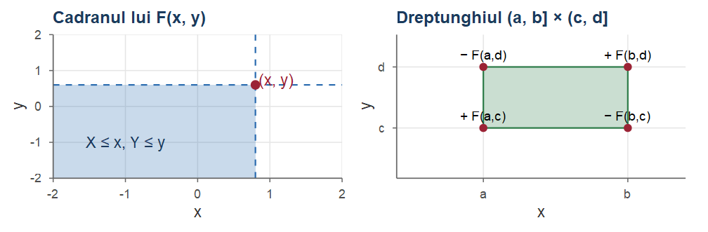
Cursul 6. Vectori aleatori: repartiții comune, covarianță și medie condiționată
Probabilități și Statistică · Cursul 6
Alexandru Amărioarei
Universitatea din București · Facultatea de Matematică și Informatică · 2026–2027
Planul cursului
| Partea | Conținut |
|---|---|
| I | Vectori aleatori; funcția de repartiție comună; cazul discret: repartiții comune, marginale, condiționate, independență, medii |
| II | Cazul continuu: densitate comună, marginale, repartiția uniformă în plan, densități condiționate, independență |
| III | Formula lui Bayes (continuu, hibrid); media condiționată, legile lui Adam și Eve; sume aleatoare; covarianță și corelație; corelația ca un cosinus |
| IV | Normala bidimensională; matricea de covarianță, simularea vectorilor normali; sume de v.a. independente; exerciții rezolvate |
Obiectivele cursului
La sfârșitul cursului, studenții vor putea:
- lucra cu repartiția comună a unui vector \((X,Y)\) (tabel sau densitate) și deduce marginalele și repartițiile condiționate;
- verifica independența (inclusiv prin criteriul de factorizare);
- aplica formula probabilității totale și formula lui Bayes în cazurile discret, continuu și hibrid;
- calcula medii condiționate și folosi legile lui Adam și Eve;
- calcula și interpreta covarianța, coeficientul de corelație și matricea de covarianță;
- determina repartiția unei sume de variabile independente (convoluție).
Recapitulare (Cursurile 2–5)
- Condiționare: \(\PP(A\mid B)=\frac{\PP(A\cap B)}{\PP(B)}\), \(\PP(A\cap B)=\PP(B)\PP(A\mid B)\); formula probabilității totale \(\PP(B)=\sum_i\PP(B\mid A_i)\PP(A_i)\) și formula lui Bayes (Cursul 2).
- \(\E[g(X)]=\sum_x g(x)p_X(x)\) (discret, Cursul 3), \(\E[g(X)]=\int g(x)f_X(x)\dd x\) (continuu, Teorema 10 din Cursul 4); \(\Var(X)=\E[X^2]-(\E X)^2\), \(\Var(aX+b)=a^2\Var(X)\).
- \(\Bin(n,p)\), \(\Pois(\lambda)\), \(\Geom(p)\); \(\Unif(a,b)\): \(\E=\frac{a+b}{2}\), \(\Var=\frac{(b-a)^2}{12}\); \(\Exp(\lambda)\): \(\PP(X>t)=e^{-\lambda t}\), \(\E=\frac1\lambda\), \(\Var=\frac1{\lambda^2}\), lipsa de memorie.
- \(\Norm(\mu,\sigma^2)\): \(\int_{\R}e^{-x^2/2}\dd x=\sqrt{2\pi}\); \(\E|Z|=\sqrt{2/\pi}\); \(aX+b\sim\Norm(a\mu+b,a^2\sigma^2)\).
- \(\GammaD(\alpha,\lambda)\): \(f(x)=\frac{\lambda^\alpha}{\Gamma(\alpha)}x^{\alpha-1}e^{-\lambda x}\), \(\E=\frac\alpha\lambda\), \(\Var=\frac\alpha{\lambda^2}\), \(\GammaD(1,\lambda)=\Exp(\lambda)\); \(\BetaD(a,b)\): \(f(x)=\frac{x^{a-1}(1-x)^{b-1}}{B(a,b)}\), \(\E=\frac{a}{a+b}\).
- Schimbarea de variabilă în integrala dublă (Teorema 13 din Cursul 5).
Partea I — Vectori aleatori; cazul discret
De ce vectori aleatori?
În aplicații observăm mai multe mărimi simultan: înălțimea și greutatea unei persoane, numărul de clienți și suma cheltuită, semnalul transmis și cel recepționat.
Repartițiile lui \(X\) și \(Y\) luate separat permit calculul lui \(\PP(X\in A)\), \(\PP(Y\in B)\), dar nu și al lui \(\PP(X+Y\le1)\) sau \(\PP(X<Y)\). Privim perechea \((X,Y)\) ca un singur obiect și studiem:
- repartiția comună a lui \((X,Y)\): probabilitățile \(\PP((X,Y)\in C)\), \(C\subseteq\R^2\);
- repartițiile marginale: repartițiile lui \(X\) și ale lui \(Y\) luate separat;
- repartițiile condiționate: repartiția lui \(X\) știind că \(Y\) a luat o anumită valoare.
Ordinea: cazul discret, cazul continuu, media condiționată (Adam și Eve), covarianța și corelația, sume de variabile independente.
Vector aleator și funcția de repartiție comună
Definiția 1 (Vector aleator)
Fie \((\Omega,\F,\PP)\) un câmp de probabilitate și \(X,Y:\Omega\to\R\) două variabile aleatoare. Aplicația \((X,Y):\Omega\to\R^2\), \(\omega\mapsto \big(X(\omega),Y(\omega)\big)\) se numește vector aleator (bidimensional) sau cuplu de variabile aleatoare. Analog, \((X_1,\dots,X_n):\Omega\to\R^n\) este un vector aleator \(n\)-dimensional.
Definiția 2 (Funcția de repartiție comună)
Funcția de repartiție a vectorului aleator \((X,Y)\) este funcția \(F_{X,Y}:\R^2\to[0,1]\), \[ F_{X,Y}(x,y)=\PP(X\le x,\ Y\le y),\qquad (x,y)\in\R^2, \] unde virgula desemnează intersecția: \(\{X\le x,\,Y\le y\}=\{X\le x\}\cap\{Y\le y\}\).
Proprietățile funcției de repartiție comune
Propoziția 3 (Proprietăți ale funcției de repartiție comune)
Funcția de repartiție comună \(F=F_{X,Y}\) are următoarele proprietăți:
- \(F\) este nedescrescătoare în fiecare argument;
- \(\lim_{x\to-\infty}F(x,y)=\lim_{y\to-\infty}F(x,y)=0\) și \(\lim_{x,y\to+\infty}F(x,y)=1\);
- marginalele: \(F_X(x)=\lim_{y\to\infty}F(x,y)\), \(F_Y(y)=\lim_{x\to\infty}F(x,y)\);
- pentru orice \(a<b\) și \(c<d\), \[ \PP(a<X\le b,\ c<Y\le d)=F(b,d)-F(a,d)-F(b,c)+F(a,c). \]
Proprietățile — demonstrație și interpretare
Demonstrație. 1–3 rezultă din monotonia și continuitatea probabilității, ca în cazul unidimensional (Cursul 3). Pentru 4, fie \(D=\{X\le b, Y\le d\}\), \(A=\{X\le a, Y\le d\}\), \(C=\{X\le b, Y\le c\}\). Atunci \(\{a<X\le b,\ c<Y\le d\}=D\setminus(A\cup C)\), \(A\cup C\subseteq D\), \(A\cap C=\{X\le a, Y\le c\}\), deci \(\PP(a<X\le b, c<Y\le d)=\PP(D)-\PP(A)-\PP(C)+\PP(A\cap C)\).■
Cazul discret: funcția de masă comună
Fie \(X(\Omega)=\{x_1,\dots,x_m\}\), \(Y(\Omega)=\{y_1,\dots,y_n\}\) (totul rămâne valabil pentru mulțimi numărabile); \((X,Y)\) ia valori în \(\{(x_i,y_j)\}\).
Definiția 4 (Funcția de masă comună)
Funcția de masă (repartiția comună) a vectorului aleator discret \((X,Y)\) este \[ p_{X,Y}(x,y)=\PP(X=x,\ Y=y),\qquad (x,y)\in\R^2 . \] Uneori se folosește și notația \(f_{X,Y}(x,y)=\PP(X=x,Y=y)\).
Ea verifică: a) \(p_{X,Y}(x,y)\ge 0\); b) \(\sum_{x}\sum_{y}p_{X,Y}(x,y)=1\). Pentru \(A\subseteq\R^2\), \(\PP\big((X,Y)\in A\big)=\sum_{(x,y)\in A}p_{X,Y}(x,y)\): suma înălțimilor „bețișoarelor” \(p_{X,Y}(x_i,y_j)\) situate deasupra regiunii \(A\).
Tabelul repartiției comune
Repartiția comună se reprezintă printr-un tabel cu dublă intrare, cu sumele pe linii și pe coloane trecute pe margini: \[ \begin{array}{c|ccccc|c} X\backslash Y & y_1 & \cdots & y_j & \cdots & y_n & \Sigma\\ \hline x_1 & p_{X,Y}(x_1,y_1) & \cdots & p_{X,Y}(x_1,y_j) & \cdots & p_{X,Y}(x_1,y_n) & \PP(X=x_1)\\ \vdots & \vdots & & \vdots & & \vdots & \vdots\\ x_i & p_{X,Y}(x_i,y_1) & \cdots & p_{X,Y}(x_i,y_j) & \cdots & p_{X,Y}(x_i,y_n) & \PP(X=x_i)\\ \vdots & \vdots & & \vdots & & \vdots & \vdots\\ x_m & p_{X,Y}(x_m,y_1) & \cdots & p_{X,Y}(x_m,y_j) & \cdots & p_{X,Y}(x_m,y_n) & \PP(X=x_m)\\ \hline \Sigma & \PP(Y=y_1) & \cdots & \PP(Y=y_j) & \cdots & \PP(Y=y_n) & 1 \end{array} \] Sumele de pe margini sunt repartițiile lui \(X\) și \(Y\) — de aici numele de repartiții marginale.
Repartiții marginale (cazul discret)
Definiția 5 (Repartiții marginale (cazul discret))
Se numește repartiția marginală a lui \(X\) funcția de masă \[ p_X(x)=\PP(X=x)=\sum_{y}\PP(X=x,\ Y=y)=\sum_y p_{X,Y}(x,y). \] Similar, repartiția marginală a lui \(Y\) este \(p_Y(y)=\sum_{x}p_{X,Y}(x,y)\).
Formula rezultă din aditivitate: evenimentele \(\{Y=y\}\) sunt disjuncte, cu reuniunea \(\Omega\), deci \[ \PP(X=x)=\PP(\{X=x\}\cap\Omega)=\PP\Big(\bigcup_y\{X=x,\,Y=y\}\Big)=\sum_y\PP(X=x,\ Y=y). \]
Marginalele nu determină repartiția comună
Atenție!
Repartiția comună determină repartițiile marginale, dar reciproca este falsă: vectori aleatori cu repartiții comune diferite pot avea aceleași marginale. De exemplu, dacă \(X,Y\sim\Bern(1/2)\), atât repartiția cu \(p_{X,Y}(0,0)=p_{X,Y}(1,1)=1/2\) (adică \(Y=X\)), cât și cea cu \(p_{X,Y}(x,y)=1/4\) pentru toate cele patru perechi au aceleași marginale. Marginalele nu conțin informație despre legătura dintre \(X\) și \(Y\).
\[ \begin{array}{c|cc|c} X\backslash Y & 0 & 1 & \Sigma\\ \hline 0 & 1/2 & 0 & 1/2\\ 1 & 0 & 1/2 & 1/2\\ \hline \Sigma & 1/2 & 1/2 & 1 \end{array} \qquad\qquad \begin{array}{c|cc|c} X\backslash Y & 0 & 1 & \Sigma\\ \hline 0 & 1/4 & 1/4 & 1/2\\ 1 & 1/4 & 1/4 & 1/2\\ \hline \Sigma & 1/2 & 1/2 & 1 \end{array} \]
Repartiția condiționată la un eveniment
Definiția 6 (Repartiția condiționată la un eveniment)
Fie \(X\) discretă și \(A\) un eveniment cu \(\PP(A)>0\). Funcția de masă a lui \(X\) condiționată de \(A\) este \[ p_{X\mid A}(x)=\PP(X=x\mid A)=\frac{\PP(\{X=x\}\cap A)}{\PP(A)}. \]
Este o funcție de masă: evenimentele \(\{X=x\}\cap A\) sunt disjuncte două câte două, iar reuniunea lor este \(A\), deci \(\PP(A)=\sum_x\PP(\{X=x\}\cap A)\) și, împărțind prin \(\PP(A)>0\), \[ \sum_x p_{X\mid A}(x)=\sum_x\frac{\PP(\{X=x\}\cap A)}{\PP(A)}=1 . \]
Exemplu: zarul, știind că rezultatul este par
Exemplul 1 (Zarul, știind că rezultatul este par)
Fie \(X\) rezultatul unui zar echilibrat și \(A=\) „rezultatul este par”, \(\PP(A)=1/2\). Atunci \[ p_{X\mid A}(x)=\frac{\PP(X=x,\ \text{par})}{\PP(\text{par})}= \begin{cases}\frac{1/6}{1/2}=\frac13, & x\in\{2,4,6\},\\ 0, & x\in\{1,3,5\},\end{cases} \] deci \(X\mid A\) este uniform repartizată pe \(\{2,4,6\}\).
Cel mai important caz particular este \(A=\{Y=y\}\), unde \(Y\) este o altă variabilă aleatoare discretă.
Repartiția condiționată a lui \(X\) la \(Y=y\)
Definiția 7 (Repartiția condiționată a lui X la Y=y)
Fie \(X,Y\) discrete și \(y\) cu \(p_Y(y)>0\). Funcția de masă condiționată a lui \(X\) la \(Y=y\) este \[ p_{X\mid Y}(x\mid y)=\PP(X=x\mid Y=y)=\frac{\PP(X=x,\ Y=y)}{\PP(Y=y)}=\frac{p_{X,Y}(x,y)}{p_Y(y)} . \] Analog, \(p_{Y\mid X}(y\mid x)=p_{X,Y}(x,y)/p_X(x)\) pentru \(p_X(x)>0\).
Pentru \(y\) fixat, \(p_{X\mid Y}(\cdot\mid y)\) este o funcție de \(x\): luăm coloana \(y\) a tabelului repartiției comune și o normalizăm (împărțim la suma ei, \(p_Y(y)\)), astfel încât suma să devină 1. Forma coloanei se păstrează; doar scara se schimbă.
Regula de înmulțire
Din definiție rezultă regula de înmulțire \[ p_{X,Y}(x,y)=p_X(x)\,p_{Y\mid X}(y\mid x)=p_Y(y)\,p_{X\mid Y}(x\mid y), \] analogul relației \(\PP(A\cap B)=\PP(A)\PP(B\mid A)\) pentru \(A=\{X=x\}\), \(B=\{Y=y\}\). Este foarte utilă când modelul este descris „în etape”: se cunoaște repartiția lui \(X\) și, pentru fiecare valoare a lui \(X\), repartiția lui \(Y\).
Observație
Rețeta pentru modele „în etape”: (1) regula de înmulțire dă repartiția comună; (2) sumele pe coloane (formula probabilității totale) dau marginala lui \(Y\); (3) formula lui Bayes răspunde la întrebările „inverse” (\(X\) știind \(Y\)).
Formula probabilității totale și formula lui Bayes
Propoziția 8 (Formula probabilității totale și formula lui Bayes (cazul discret))
Fie \(X,Y\) variabile aleatoare discrete.
Dacă \(A_1,\dots,A_n\) este o partiție a lui \(\Omega\) cu \(\PP(A_i)>0\), atunci \(p_X(x)=\sum_{i=1}^n p_{X\mid A_i}(x)\,\PP(A_i)\). În particular, \(p_X(x)=\sum_y p_{X\mid Y}(x\mid y)\,p_Y(y)\).
(Formula lui Bayes) Pentru \(p_Y(y)>0\), \[ p_{X\mid Y}(x\mid y)=\frac{p_X(x)\,p_{Y\mid X}(y\mid x)}{p_Y(y)}=\frac{p_X(x)\,p_{Y\mid X}(y\mid x)}{\sum_{x'}p_X(x')\,p_{Y\mid X}(y\mid x')} . \]
Demonstrație.
- este formula probabilității totale pentru evenimentul \(B=\{X=x\}\). (ii) Din regula de înmulțire, \(p_{X\mid Y}(x\mid y)=p_{X,Y}(x,y)/p_Y(y)=p_X(x)p_{Y\mid X}(y\mid x)/p_Y(y)\); numitorul se scrie cu (i).
■
Exemplu: profesorul și întrebările studenților
Exemplul 2 (Profesorul și întrebările studenților)
Un profesor răspunde incorect în \(25\%\) din cazuri, independent de la o întrebare la alta; la un curs poate primi \(0\), \(1\) sau \(2\) întrebări, fiecare variantă cu probabilitatea \(1/3\). Fie \(X\) numărul de întrebări și \(Y\) numărul de răspunsuri greșite. Determinăm repartiția comună a lui \((X,Y)\).
Modelul este dat „în etape”: \(X\) este uniformă pe \(\{0,1,2\}\), iar \(Y\mid X=x\sim\Bin(x,1/4)\). Cu regula de înmulțire: \[ \begin{aligned} \PP(X=0,Y=0)&=\tfrac13, & \PP(X=1,Y=0)&=\tfrac13\cdot\tfrac34=\tfrac14,\\ \PP(X=1,Y=1)&=\tfrac13\cdot\tfrac14=\tfrac1{12}, & \PP(X=2,Y=0)&=\tfrac13\big(\tfrac34\big)^2=\tfrac3{16},\\ \PP(X=2,Y=1)&=\tfrac13\tbinom21\tfrac14\cdot\tfrac34=\tfrac18, & \PP(X=2,Y=2)&=\tfrac13\big(\tfrac14\big)^2=\tfrac1{48}, \end{aligned} \] iar celelalte probabilități sunt nule (\(Y\le X\)).
Profesorul: tabelul și formula lui Bayes
Continuare
Tabelul repartiției comune: \[ \begin{array}{c|ccc|c} X\backslash Y & 0 & 1 & 2 & \Sigma\\ \hline 0 & 1/3 & 0 & 0 & 1/3\\ 1 & 1/4 & 1/12 & 0 & 1/3\\ 2 & 3/16 & 1/8 & 1/48 & 1/3\\ \hline \Sigma & 37/48 & 5/24 & 1/48 & 1 \end{array} \] Marginala lui \(Y\) se obține cu formula probabilității totale: \(\PP(Y=0)=\frac13+\frac14+\frac3{16}=\frac{37}{48}\).
Întrebare „inversă” (Bayes): știind că profesorul nu a greșit niciodată la un curs, probabilitatea să nu fi primit nicio întrebare este \(\PP(X=0\mid Y=0)=\frac{1/3}{37/48}=\frac{16}{37}\approx 0.43\).
Variabile aleatoare discrete independente
Definiția 9 (Variabile aleatoare discrete independente)
Variabilele aleatoare discrete \(X\) și \(Y\) sunt independente, și notăm \(X\indep Y\), dacă \[ p_{X,Y}(x,y)=p_X(x)\,p_Y(y)\qquad\text{pentru orice }x,y, \] adică \(\{X=x\}\) și \(\{Y=y\}\) sunt independente pentru orice \(x,y\). Echivalent, \(p_{X\mid Y}(x\mid y)=p_X(x)\) pentru orice \(y\) cu \(p_Y(y)>0\): informația despre \(Y\) nu modifică repartiția lui \(X\).
În exemplul profesorului, \(X\) și \(Y\) nu sunt independente: \(\PP(X=0,Y=1)=0\ne\frac13\cdot\frac5{24}\).
Observație
În tabel, independența înseamnă că fiecare celulă este produsul marginalelor corespunzătoare; o singură celulă nulă cu marginale nenule este suficientă pentru a infirma independența.
Exemplu: găina și ouăle
Exemplul 3 (Găina și ouăle: descompunerea unei variabile Poisson)
O găină depune \(N\sim\Pois(\lambda)\) ouă. Fiecare ou eclozează cu probabilitatea \(p\in(0,1)\), independent de celelalte. Fie \(X\) numărul de ouă eclozate și \(Y\) numărul de ouă neeclozate, \(N=X+Y\). Determinăm repartiția comună a lui \((X,Y)\).
Avem \(\PP(N=n)=e^{-\lambda}\lambda^n/n!\), \(X\mid N=n\sim\Bin(n,p)\), \(Y\mid N=n\sim\Bin(n,1-p)\). Cu formula probabilității totale, pentru \(i,j\ge0\), \[ \PP(X=i,Y=j)=\sum_{n=0}^\infty \PP(X=i,Y=j\mid N=n)\,\PP(N=n). \] Dacă \(n\ne i+j\), \(\PP(X=i,Y=j\mid N=n)=0\): rămâne doar termenul \(n=i+j\). În plus, știind \(N=i+j\), \(\{X=i\}\) implică \(\{Y=j\}\), deci \(\PP(X=i,Y=j\mid N=i+j)=\PP(X=i\mid N=i+j)\).
Găina și ouăle — calculul
Continuare
Obținem \[ \begin{aligned} \PP(X=i,Y=j)&=\binom{i+j}{i}p^i(1-p)^j\cdot e^{-\lambda}\frac{\lambda^{i+j}}{(i+j)!} =\frac{p^i(1-p)^j}{i!\,j!}\,e^{-\lambda}\lambda^i\lambda^j\\ &=e^{-\lambda p}\frac{(\lambda p)^i}{i!}\cdot e^{-\lambda(1-p)}\frac{(\lambda(1-p))^j}{j!}, \end{aligned} \] unde am folosit \(\lambda=\lambda p+\lambda(1-p)\).
Găina și ouăle — marginalele; subțierea Poisson
Continuare
Sumând după \(j\ge0\) găsim marginala lui \(X\): \[ \PP(X=i)=e^{-\lambda p}\frac{(\lambda p)^i}{i!}\sum_{j\ge0}e^{-\lambda(1-p)}\frac{(\lambda(1-p))^j}{j!}=e^{-\lambda p}\frac{(\lambda p)^i}{i!}, \] adică \(X\sim\Pois(\lambda p)\) și, analog, \(Y\sim\Pois(\lambda(1-p))\). Mai mult, \(\PP(X=i,Y=j)=\PP(X=i)\PP(Y=j)\): \(X\) și \(Y\) sunt independente.
Observație
Rezultatul din Exemplul 3 este descompunerea (subțierea) repartiției Poisson: dacă fiecare dintre cele \(N\sim\Pois(\lambda)\) „sosiri” este marcată independent cu probabilitatea \(p\), numerele de sosiri marcate și nemarcate sunt variabile Poisson independente, de parametri \(\lambda p\) și \(\lambda(1-p)\).
Media unei funcții de două variabile discrete
Pentru \(Z=g(X,Y)\) (de exemplu \(3x+7y\), \(xy\), \(\max(x,y)\)) nu trebuie să determinăm repartiția lui \(Z\): folosim direct repartiția comună (ca formula de transfer din Cursul 3).
Teorema 10 (Media unei funcții de un vector aleator discret)
Dacă \(X\) și \(Y\) sunt discrete și \(g:\R^2\to\R\), atunci (când seria converge absolut) \[ \E[g(X,Y)]=\sum_x\sum_y g(x,y)\,p_{X,Y}(x,y). \] În particular, media este liniară: \(\E[aX+bY]=a\E[X]+b\E[Y]\) pentru orice \(a,b\in\R\).
Media unei funcții — demonstrație
Demonstrație. Grupând termenii după valorile \(z\) ale lui \(Z=g(X,Y)\), \[ \sum_{x,y}g(x,y)p_{X,Y}(x,y)=\sum_z z\sum_{(x,y):\,g(x,y)=z}p_{X,Y}(x,y)=\sum_z z\,\PP(Z=z)=\E[Z]. \] Pentru liniaritate luăm \(g(x,y)=ax+by\): \[ \begin{aligned} \sum_{x,y}(ax+by)p_{X,Y}(x,y)&=a\sum_x x\sum_y p_{X,Y}(x,y)+b\sum_y y\sum_x p_{X,Y}(x,y)\\ &=a\sum_x x\,p_X(x)+b\sum_y y\,p_Y(y)=a\E[X]+b\E[Y]. \end{aligned} \]■
Exemplu: un tabel de repartiție comună
Exemplul 4 (Un tabel de repartiție comună)
Vectorul \((X,Y)\) are repartiția comună, cu marginalele pe margini: \[ \begin{array}{c|ccc|c} X\backslash Y & -1 & 0 & 2 & \Sigma\\ \hline 1 & 1/18 & 3/18 & 2/18 & 6/18\\ 2 & 2/18 & 0 & 3/18 & 5/18\\ 3 & 0 & 4/18 & 3/18 & 7/18\\ \hline \Sigma & 3/18 & 7/18 & 8/18 & 1 \end{array} \] Determinăm repartițiile marginale, repartițiile condiționate \(X\mid Y=0\) și \(Y\mid X=1\) și calculăm \(\E[XY]\) și \(\E[3X+2Y]\).
Tabelul: condiționate și medii
Continuare
Marginalele (sumele pe linii, respectiv pe coloane): \(X\sim\begin{pmatrix}1&2&3\\ \frac6{18}&\frac5{18}&\frac7{18}\end{pmatrix}\), \(Y\sim\begin{pmatrix}-1&0&2\\ \frac3{18}&\frac7{18}&\frac8{18}\end{pmatrix}\).
Condiționatele. Normalizăm coloana \(y=0\) (suma \(\frac7{18}\)), respectiv linia \(x=1\) (suma \(\frac6{18}\)): \[ X\mid Y=0\sim\begin{pmatrix}1&2&3\\ \frac37&0&\frac47\end{pmatrix},\qquad Y\mid X=1\sim\begin{pmatrix}-1&0&2\\ \frac16&\frac36&\frac26\end{pmatrix}. \] Medii. Cu Teorema 10 (termenii cu \(y=0\) sau cu probabilitate nulă lipsesc), \[ \E[XY]=1\cdot(-1)\cdot\tfrac1{18}+1\cdot2\cdot\tfrac2{18}+2\cdot(-1)\cdot\tfrac2{18}+2\cdot2\cdot\tfrac3{18}+3\cdot2\cdot\tfrac3{18}=\tfrac{-1+4-4+12+18}{18}=\tfrac{29}{18}. \]
Tabelul: media lui \(3X+2Y\)
Continuare
Direct: calculăm \(3x+2y\) în fiecare celulă nenulă și obținem repartiția lui \(Z=3X+2Y\): \[ 3X+2Y\sim\begin{pmatrix}1&3&4&7&9&10&13\\ \frac1{18}&\frac3{18}&\frac2{18}&\frac2{18}&\frac4{18}&\frac3{18}&\frac3{18}\end{pmatrix}, \qquad \E[3X+2Y]=\frac{1+9+8+14+36+30+39}{18}=\frac{137}{18}. \] Prin liniaritate (mult mai simplu): \(\E[X]=\frac{6+10+21}{18}=\frac{37}{18}\), \(\E[Y]=\frac{-3+16}{18}=\frac{13}{18}\) și \[ \E[3X+2Y]=3\cdot\frac{37}{18}+2\cdot\frac{13}{18}=\frac{137}{18}. \]
Tabelul — verificare în R
Calculele se verifică ușor în R, reprezentând repartiția comună ca matrice:
Pt <- matrix(c(1, 3, 2, 2, 0, 3, 0, 4, 3), nrow = 3, byrow = TRUE) / 18
xt <- c(1, 2, 3); yt <- c(-1, 0, 2)
pX <- rowSums(Pt); pY <- colSums(Pt) # marginalele
EX <- sum(xt * pX); EY <- sum(yt * pY); EXY <- sum(outer(xt, yt) * Pt)
MASS::fractions(c(EX = EX, EY = EY, EXY = EXY, E3X2Y = 3 * EX + 2 * EY))
#> EX EY EXY E3X2Y
#> 37/18 13/18 29/18 137/18
MASS::fractions(Pt[, yt == 0] / pY[yt == 0]) # repartiția X | Y = 0
#> [1] 3/7 0 4/7Tabelul — ilustrare grafică
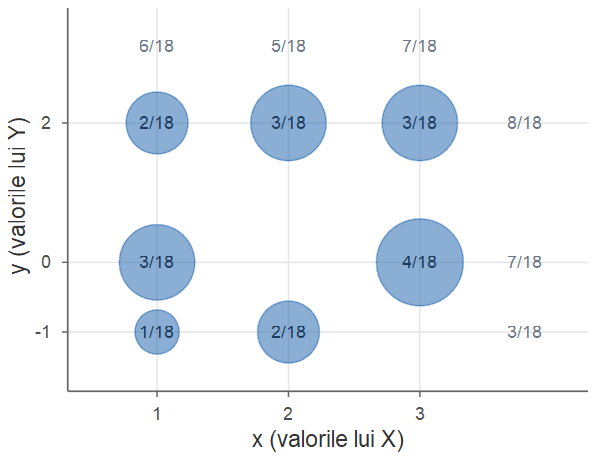
Aria fiecărui disc este proporțională cu \(p_{X,Y}(x,y)\).
Sumele pe coloane (sus) și pe linii (dreapta), în gri, sunt repartițiile marginale.
Condiționarea la \(Y=0\) înseamnă: păstrăm doar rândul orizontal \(y=0\) și îl renormalizăm.
Media condiționată (cazul discret)
Definiția 11 (Media condiționată (cazul discret))
Fie \(X\) discretă și \(A\in\F\) cu \(\PP(A)>0\). Media condiționată a lui \(X\) la \(A\) este \[ \E[X\mid A]=\sum_x x\,p_{X\mid A}(x), \] iar \(\E[g(X)\mid A]=\sum_x g(x)\,p_{X\mid A}(x)\). Pentru \(A=\{Y=y\}\) obținem media condiționată a lui \(X\) la \(Y=y\): \[ \E[X\mid Y=y]=\sum_x x\,p_{X\mid Y}(x\mid y). \]
Odată determinată repartiția condiționată, media condiționată este pur și simplu media acestei repartiții.
Exemplu: medii condiționate pentru tabel
Exemplul 5 (Medii condiționate pentru tabelul din exemplul anterior)
Din \(X\mid Y=0\sim\begin{pmatrix}1&2&3\\ 3/7&0&4/7\end{pmatrix}\): \(\E[X\mid Y=0]=1\cdot\frac37+2\cdot 0+3\cdot\frac47=\frac{15}7\); din \(Y\mid X=1\sim\begin{pmatrix}-1&0&2\\ 1/6&3/6&2/6\end{pmatrix}\): \(\E[Y\mid X=1]=-\frac16+\frac46=\frac12\). La fel, \[ X\mid Y=-1\sim\begin{pmatrix}1&2&3\\ \frac13&\frac23&0\end{pmatrix},\qquad X\mid Y=2\sim\begin{pmatrix}1&2&3\\ \frac28&\frac38&\frac38\end{pmatrix}, \] deci \(\E[X\mid Y=-1]=\frac53\) și \(\E[X\mid Y=2]=\frac{17}8\).
Media condiționată ca variabilă aleatoare: tabelul
Continuare
\(\E[X\mid Y=y]\) este o funcție de \(y\), \(g(y)=\E[X\mid Y=y]\). Înlocuind \(y\) cu \(Y\) obținem o nouă variabilă aleatoare \(g(Y)\), care ia valoarea \(g(y)\) cu probabilitatea \(\PP(Y=y)\): \[ \E[X\mid Y]=g(Y)\sim\begin{pmatrix}\frac53&\frac{15}7&\frac{17}8\\[1mm] \frac3{18}&\frac7{18}&\frac8{18}\end{pmatrix}. \] Observăm că \[ \E\big[\E[X\mid Y]\big]=\frac53\cdot\frac3{18}+\frac{15}7\cdot\frac7{18}+\frac{17}8\cdot\frac8{18}=\frac{5+15+17}{18}=\frac{37}{18}=\E[X]. \] Nu este o coincidență!
Formula probabilității totale pentru medii (cazul discret)
Propoziția 12 (Formula probabilității totale pentru medii (cazul discret))
Dacă \(X\) și \(Y\) sunt discrete (și \(\E|X|<\infty\)), atunci \(\E[X]=\sum_y\E[X\mid Y=y]\,\PP(Y=y)\).
Demonstrație. Folosind definițiile mediei condiționate și funcției de masă condiționate, \[ \sum_y\E[X\mid Y=y]\,p_Y(y)=\sum_y\Big(\sum_x x\frac{p_{X,Y}(x,y)}{p_Y(y)}\Big)p_Y(y) =\sum_x x\sum_y p_{X,Y}(x,y)=\sum_x x\,p_X(x)=\E[X]. \]■
Varianța condiționată
În mod analog se definește varianța condiționată, ca varianța repartiției condiționate: \[ \begin{aligned} \Var(X\mid A)&=\E\big[(X-\E[X\mid A])^2\mid A\big]=\E[X^2\mid A]-\big(\E[X\mid A]\big)^2,\\ \Var(X\mid Y=y)&=\E[X^2\mid Y=y]-\big(\E[X\mid Y=y]\big)^2 . \end{aligned} \]
Exemplu
Pentru tabelul din Exemplul 4, \(X\mid Y=0\) ia valorile \(1\) și \(3\) cu probabilitățile \(\frac37\), \(\frac47\): \(\E[X^2\mid Y=0]=\frac{3+36}{7}=\frac{39}{7}\), deci \(\Var(X\mid Y=0)=\frac{39}{7}-\big(\frac{15}{7}\big)^2=\frac{48}{49}\).
Partea II — Cazul continuu
Densitatea comună
În cazul continuu, probabilitățile nu mai sunt sume de „bețișoare”, ci volume de sub o suprafață.
Definiția 13 (Densitatea comună)
Perechea \((X,Y)\) formează un cuplu de variabile aleatoare continue dacă există \(f_{X,Y}:\R^2\to[0,\infty)\) astfel încât \[ \PP\big((X,Y)\in A\big)=\iint_A f_{X,Y}(x,y)\dd x\dd y\qquad\text{pentru orice } A\subseteq\R^2 \text{ (boreliană)}. \] Funcția \(f_{X,Y}\) se numește densitatea comună a lui \((X,Y)\).
Pentru un dreptunghi și pentru \(A=\R^2\) (normalizare): \[ \PP(a\le X\le b,\ c\le Y\le d)=\int_a^b\!\!\int_c^d f_{X,Y}(x,y)\dd y\dd x,\qquad \int_{-\infty}^{+\infty}\!\!\int_{-\infty}^{+\infty}f_{X,Y}(x,y)\dd x\dd y=1 . \]
Interpretarea densității comune
Pentru un dreptunghi mic \([x,x+\mathrm{d}x]\times[y,y+\mathrm{d}y]\), \[ \PP\big(X\in[x,x+\mathrm{d}x],\ Y\in[y,y+\mathrm{d}y]\big)=\int_x^{x+\mathrm{d}x}\!\!\int_y^{y+\mathrm{d}y}f_{X,Y}(u,v)\dd v\dd u\approx f_{X,Y}(x,y)\,\mathrm{d}x\,\mathrm{d}y , \] deci \(f_{X,Y}(x,y)\) este probabilitatea pe unitatea de arie în jurul punctului \((x,y)\).
- Ca și în cazul unidimensional, \(f_{X,Y}(x,y)\) nu este o probabilitate și poate depăși \(1\).
- Densitatea comună conține toată informația despre \(X\) și \(Y\).
- Analogia cu cazul discret: \(\sum\ \to\ \int\) și \(p_{X,Y}(x,y)\ \to\ f_{X,Y}(x,y)\dd x\dd y\).
- Reciproc, orice \(f\ge0\) cu integrala pe \(\R^2\) egală cu 1 este densitatea unui vector aleator.
Legătura cu funcția de repartiție comună (Definiția 2): \[ F_{X,Y}(x,y)=\int_{-\infty}^{x}\!\!\int_{-\infty}^{y}f_{X,Y}(u,v)\dd v\dd u ,\qquad f_{X,Y}(x,y)=\frac{\partial^2 F_{X,Y}}{\partial x\,\partial y}(x,y)\ \text{(în punctele de continuitate)}. \]
Densitățile marginale
Propoziția 14 (Densitățile marginale)
Dacă \((X,Y)\) are densitatea comună \(f_{X,Y}\), atunci \(X\) și \(Y\) sunt continue, cu densitățile (densități marginale) \[ f_X(x)=\int_{\R}f_{X,Y}(x,y)\dd y,\qquad f_Y(y)=\int_{\R}f_{X,Y}(x,y)\dd x . \]
Demonstrație. Pentru \(B\subseteq\R\), \(\{X\in B\}=\{(X,Y)\in B\times\R\}\) (banda verticală deasupra lui \(B\)). Prin urmare \[ \PP(X\in B)=\PP\big((X,Y)\in B\times\R\big)=\iint_{B\times\R}f_{X,Y}(x,y)\dd y\dd x=\int_B\Big(\int_{\R} f_{X,Y}(x,y)\dd y\Big)\dd x . \] Cum \(B\) este arbitrar, din \(\PP(X\in B)=\int_B f_X(x)\dd x\) rezultă formula pentru \(f_X\); analog pentru \(f_Y\).■
Exemplu: întâlnirea lui Ionel cu Maria
Exemplul 6 (Întâlnirea lui Ionel cu Maria)
Ionel și Maria își dau întâlnire la ora 12 și ajung cu întârzieri aleatoare \(X\), respectiv \(Y\), între 0 și 1 oră; \((X,Y)\) este „ales la întâmplare” în \([0,1]^2\): \(f_{X,Y}=c\) pe \([0,1]^2\) și \(0\) în rest.
Din normalizare, \(\int_0^1\!\int_0^1c\dd x\dd y=c=1\). Marginalele: \(f_X(x)=\int_0^1 1\dd y=1\) pe \([0,1]\), deci \(X\sim\Unif(0,1)\); analog \(Y\sim\Unif(0,1)\).
Dacă fiecare îl așteaptă pe celălalt cel mult un sfert de oră, se întâlnesc dacă \(|X-Y|\le 1/4\): pătratul minus două triunghiuri cu catetele \(3/4\), \[ \PP\big(|X-Y|\le\tfrac14\big)=1-2\cdot\frac12\Big(\frac34\Big)^2=\frac7{16}=0.4375 . \]
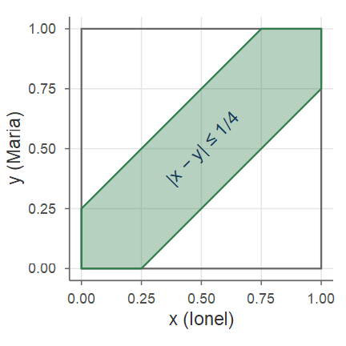
Repartiția uniformă pe o mulțime din plan
Definiția 15 (Repartiția uniformă pe o mulțime din plan)
Fie \(S\subseteq\R^2\) cu arie finită și nenulă. Vectorul \((X,Y)\) este repartizat uniform pe \(S\), \((X,Y)\sim\Unif(S)\), dacă are densitatea \[ f_{X,Y}(x,y)=\begin{cases}\dfrac{1}{\mathrm{Aria}(S)},&(x,y)\in S,\\[2mm] 0,&\text{altfel,}\end{cases}\qquad\text{adică } f_{X,Y}=\frac{1}{\mathrm{Aria}(S)}\Ind_S . \]
Constanta rezultă din normalizare: \(1=\iint_{\R^2}c\,\Ind_S\dd x\dd y=c\cdot\mathrm{Aria}(S)\). Probabilitățile sunt rapoarte de arii: \[ \PP\big((X,Y)\in A\big)=\frac{1}{\mathrm{Aria}(S)}\iint_A\Ind_S(x,y)\dd x\dd y=\frac{\mathrm{Aria}(A\cap S)}{\mathrm{Aria}(S)}, \] adică modelul geometric de probabilitate din Cursul 1.
Exemplu: acul lui Buffon
Exemplul 7 (Problema acului lui Buffon)
O suprafață este marcată cu linii paralele la distanța \(d\). Aruncăm la întâmplare un ac de lungime \(l\le d\). Care este probabilitatea ca acul să intersecteze una dintre linii?
Descriem poziția acului prin: \(\Theta\in[0,\pi/2]\), unghiul ascuțit dintre ac și drepte; \(X\in[0,d/2]\), distanța de la mijlocul acului la cea mai apropiată dreaptă.

Acul lui Buffon — calculul
Continuare
„La întâmplare” înseamnă \((X,\Theta)\sim\Unif(S)\), \(S=[0,d/2]\times[0,\pi/2]\), deci \(f_{X,\Theta}(x,\theta)=\frac{1}{(d/2)(\pi/2)}=\frac{4}{\pi d}\) pe \(S\). Jumătatea de ac dinspre cea mai apropiată dreaptă are proiecția pe direcția perpendiculară \(\frac l2\sin\theta\), deci acul intersectează o dreaptă dacă și numai dacă \(X\le\frac l2\sin\Theta\). Cu \(B=\{(x,\theta)\in S\mid x\le\frac l2\sin\theta\}\), \[ \PP\Big(X\le\frac l2\sin\Theta\Big)=\iint_B\frac{4}{\pi d}\dd x\dd\theta=\frac4{\pi d}\int_0^{\pi/2}\!\!\int_0^{\frac l2\sin\theta}\dd x\dd\theta=\frac{4}{\pi d}\int_0^{\pi/2}\frac l2\sin\theta\dd\theta=\frac{2l}{\pi d}. \] Metodă Monte Carlo de estimare a lui \(\pi\): dacă din \(N\) aruncări \(n\) intersectează o linie, \(\frac nN\approx\frac{2l}{\pi d}\), deci \(\pi\approx\frac{2lN}{nd}\).
Acul lui Buffon — simulare
set.seed(1777) # anul în care Buffon a publicat problema
N <- 1e5; l <- 1; d <- 2
theta <- runif(N, 0, pi / 2); xb <- runif(N, 0, d / 2)
taie <- xb <= l / 2 * sin(theta) # acul intersectează o linie?
c(p_simulat = mean(taie), p_teoretic = 2 * l / (pi * d),
pi_estimat = 2 * l * N / (d * sum(taie)))
#> p_simulat p_teoretic pi_estimat
#> 0.3182 0.3183 3.1427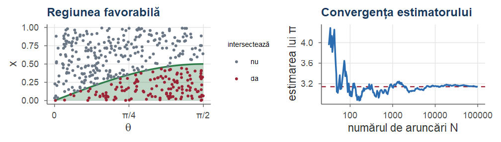
Densitatea condiționată la un eveniment
Definiția 16 (Densitatea condiționată la un eveniment)
Fie \(X\) continuă și \(A\in\F\) cu \(\PP(A)>0\). Densitatea condiționată a lui \(X\) la \(A\) este funcția \(f_{X\mid A}\ge0\) care verifică \(\PP(X\in B\mid A)=\int_B f_{X\mid A}(x)\dd x\) pentru orice \(B\subseteq\R\). Pentru \(B=\R\): \(\int_{\R} f_{X\mid A}=1\), deci \(f_{X\mid A}\) este o densitate.
Caz important: \(A=\{X\in C\}\), cu \(\PP(X\in C)>0\). Atunci \[ \PP(X\in B\mid X\in C)=\frac{\PP(X\in B,\ X\in C)}{\PP(X\in C)}=\int_B\frac{f_X(x)\Ind_C(x)}{\PP(X\in C)}\dd x, \quad\text{deci}\quad f_{X\mid\{X\in C\}}(x)=\begin{cases}\dfrac{f_X(x)}{\PP(X\in C)},& x\in C,\\[2mm] 0,&\text{altfel.}\end{cases} \]
Uniforma condiționată la un subinterval
Graficul densității condiționate se obține „tăind” densitatea lui \(X\) în afara lui \(C\) și renormalizând partea rămasă (înmulțind-o cu \(1/\PP(X\in C)\ge1\)).
Exemplul 8 (Uniforma condiționată la un subinterval)
Fie \(X\sim\Unif(a,b)\) și \([c,d]\subseteq[a,b]\). Cum \(\PP(X\in[c,d])=\frac{d-c}{b-a}\), \[ f_{X\mid X\in[c,d]}(x)=\frac{\frac1{b-a}\Ind_{[a,b]}(x)}{\frac{d-c}{b-a}}\,\Ind_{[c,d]}(x)=\frac{1}{d-c}\Ind_{[c,d]}(x): \] condiționată la un subinterval, o variabilă uniformă rămâne uniformă, \(X\mid\{X\in[c,d]\}\sim\Unif(c,d)\).
Formula probabilității totale pentru densități
Propoziția 17 (Formula probabilității totale pentru densități)
Fie \(A_1,\dots,A_n\) o partiție a lui \(\Omega\), cu \(\PP(A_i)>0\), și \(X\) continuă astfel încât fiecare \(X\mid A_i\) are densitatea \(f_{X\mid A_i}\). Atunci \[ f_X(x)=\sum_{i=1}^n f_{X\mid A_i}(x)\,\PP(A_i). \]
Demonstrație. Aplicăm formula probabilității totale evenimentului \(\{X\le x\}\) și derivăm în raport cu \(x\): \[ \int_{-\infty}^x f_X(t)\dd t=\PP(X\le x)=\sum_{i=1}^n\PP(X\le x\mid A_i)\PP(A_i)=\sum_{i=1}^n\PP(A_i)\int_{-\infty}^x f_{X\mid A_i}(t)\dd t . \] ■
Exemplu: timpul de așteptare la metrou
Exemplul 9 (Timpul de așteptare la metrou)
Metroul circulă la 15 minute, cu trenuri la \(7^{00}\), \(7^{15}\), \(7^{30}\) etc. Ajungem în stație la un moment \(X\) uniform între \(7^{10}\) și \(7^{30}\). Determinăm densitatea timpului de așteptare \(Y\) (în minute) până la primul metrou.
Ideea: condiționăm după metroul în care urcăm; pe fiecare parte a partiției, timpul de așteptare este uniform (Exemplul 8).
Timpul de așteptare la metrou — soluție
Continuare
Partiția: \(A=\{7^{10}\le X\le 7^{15}\}\) (urcăm în metroul de la \(7^{15}\)) și \(B=\{7^{15}<X\le 7^{30}\}\) (urcăm în cel de la \(7^{30}\)), cu \(\PP(A)=\frac5{20}=\frac14\), \(\PP(B)=\frac{15}{20}=\frac34\).
Știind \(A\), momentul sosirii este uniform pe \([7^{10},7^{15}]\) (Exemplul 8), deci \(Y=7^{15}-X\sim\Unif(0,5)\): \(f_{Y\mid A}(y)=\frac15\Ind_{[0,5]}(y)\). Analog, pe \(B\), \(Y=7^{30}-X\sim\Unif(0,15)\). Cu Propoziția 17, \[ f_Y(y)=\frac15\Ind_{[0,5]}(y)\cdot\frac14+\frac1{15}\Ind_{[0,15]}(y)\cdot\frac34= \begin{cases}\frac1{10},&0\le y\le5,\\[1mm] \frac1{20},&5<y\le15,\\[1mm] 0,&\text{altfel.}\end{cases} \] Timpii scurți apar atât când urcăm în metroul de la \(7^{15}\), cât și în cel de la \(7^{30}\).
Densitatea condiționată a lui \(X\) la \(Y=y\)
Dificultate: \(\PP(Y=y)=0\), deci definiția se face prin analogie cu cazul discret.
Definiția 18 (Densitatea condiționată a lui X la Y=y)
Fie \(X,Y\) continue cu densitatea comună \(f_{X,Y}\). Pentru \(y\) cu \(f_Y(y)>0\), densitatea condiționată a lui \(X\) la \(Y=y\) este \[ f_{X\mid Y}(x\mid y)=\frac{f_{X,Y}(x,y)}{f_Y(y)},\qquad x\in\R . \]
Pentru \(y\) fixat, \(f_{X\mid Y}(\cdot\mid y)\) este o densitate: este nenegativă și \[ \int_{-\infty}^{+\infty}f_{X\mid Y}(x\mid y)\dd x=\frac{\int_{-\infty}^{+\infty}f_{X,Y}(x,y)\dd x}{f_Y(y)}=\frac{f_Y(y)}{f_Y(y)}=1 . \]
Densitatea condiționată: interpretare și regula de înmulțire
Geometric, secționăm suprafața \(z=f_{X,Y}(x,y)\) cu planul vertical corespunzător valorii fixate \(y\) și normalizăm curba obținută ca să aibă aria 1 (figura normalei bidimensionale, Partea IV).
Cu ajutorul ei calculăm probabilități condiționate \[ \PP(X\in A\mid Y=y)=\int_A f_{X\mid Y}(x\mid y)\dd x, \] iar relația din definiție se rescrie, simetric, ca regula de înmulțire \[ f_{X,Y}(x,y)=f_{X\mid Y}(x\mid y)\,f_Y(y)=f_{Y\mid X}(y\mid x)\,f_X(x). \]
Exemplu: repartiția uniformă pe disc
Exemplul 10 (Repartiția uniformă pe disc)
Fie \(D=\{(x,y)\mid x^2+y^2\le r^2\}\) și \((X,Y)\sim\Unif(D)\): \(f_{X,Y}(x,y)=\frac{1}{\pi r^2}\Ind_D(x,y)\). Calculăm \(f_{X\mid Y}\).
Pentru \(y\in[-r,r]\), \((x,y)\in D\iff -\sqrt{r^2-y^2}\le x\le\sqrt{r^2-y^2}\), deci \[ f_Y(y)=\int_{-\infty}^{+\infty}\frac{1}{\pi r^2}\Ind_D(x,y)\dd x=\frac1{\pi r^2}\int_{-\sqrt{r^2-y^2}}^{\sqrt{r^2-y^2}}1\dd x=\frac{2\sqrt{r^2-y^2}}{\pi r^2},\qquad y\in[-r,r], \] și, prin simetrie, \(f_X(x)=\frac{2}{\pi r^2}\sqrt{r^2-x^2}\) pe \([-r,r]\) (repartiția semicirculară).
Uniforma pe disc: densitatea condiționată
Continuare
Densitatea condiționată este, pentru \(y\in(-r,r)\), \[ f_{X\mid Y}(x\mid y)=\frac{\frac1{\pi r^2}\Ind_D(x,y)}{\frac{2}{\pi r^2}\sqrt{r^2-y^2}}=\frac{1}{2\sqrt{r^2-y^2}}\Ind_{[-\sqrt{r^2-y^2},\,\sqrt{r^2-y^2}]}(x). \] Știind \(Y=y\), \(X\) este uniformă pe coarda orizontală de la ordonata \(y\): \(X\mid Y=y\sim\Unif\big(-\sqrt{r^2-y^2},\sqrt{r^2-y^2}\big)\).
Uniforma pe disc: un algoritm de simulare
Continuare
Algoritm de generare a unui punct uniform în disc: (1) generăm \(Y\) cu densitatea \(\frac{2}{\pi r^2}\sqrt{r^2-y^2}\); (2) știind \(Y=y\), generăm \(X\) uniform pe \([-\sqrt{r^2-y^2},\sqrt{r^2-y^2}]\). Din regula de înmulțire, \((X,Y)\) are densitatea \(f_{X\mid Y}f_Y=f_{X,Y}\). Pentru (1): dacă \(B\sim\BetaD(3/2,3/2)\) (densitate \(\propto\sqrt{b(1-b)}\)), \(Y=r(2B-1)\) are densitatea \(\propto\sqrt{(r+y)(r-y)}=\sqrt{r^2-y^2}\).
set.seed(11); n <- 5000; r <- 1
Yd <- r * (2 * rbeta(n, 1.5, 1.5) - 1) # pasul 1: Y semicirculară
a <- sqrt(r^2 - Yd^2)
Xd <- runif(n, -a, a) # pasul 2: X | Y = y uniformă pe coardă
c(in_disc = mean(Xd^2 + Yd^2 <= r^2), # toate punctele sunt în disc
P_disc_mic = mean(Xd^2 + Yd^2 <= r^2 / 4)) # teoretic: 1/4
#> in_disc P_disc_mic
#> 1.0000 0.2482Uniforma pe disc: ilustrare
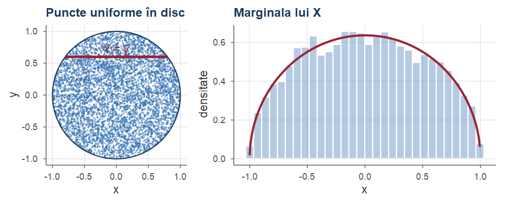
Stânga: 5000 de puncte simulate și o coardă \(Y=y\) pe care \(X\) este uniformă. Dreapta: histograma lui \(X\) și marginala semicirculară \(f_X(x)=\frac{2}{\pi}\sqrt{1-x^2}\).
Independența variabilelor aleatoare
Definiția 19 (Variabile aleatoare independente)
Variabilele aleatoare \(X\) și \(Y\) (de orice tip) sunt independente, \(X\indep Y\), dacă \[ \PP(X\in A,\ Y\in B)=\PP(X\in A)\,\PP(Y\in B)\qquad\text{pentru orice } A,B\subseteq\R . \] Mai general, \(X_1,\dots,X_n\) sunt independente dacă \(\PP(X_1\in A_1,\dots,X_n\in A_n)=\prod_{i=1}^n\PP(X_i\in A_i)\) pentru orice \(A_1,\dots,A_n\).
Cu \(A=(-\infty,x]\) și \(B=(-\infty,y]\) obținem că, pentru variabile independente, \(F_{X,Y}(x,y)=F_X(x)F_Y(y)\) pentru orice \(x,y\) (se poate arăta că și reciproca este adevărată). Pentru variabile discrete, definiția este echivalentă cu Definiția 9.
Independența variabilelor continue
Propoziția 20 (Independența variabilelor continue)
Fie \((X,Y)\) cu densitatea comună \(f_{X,Y}\). Atunci \(X\indep Y\) dacă și numai dacă \(f_{X,Y}(x,y)=f_X(x)\,f_Y(y)\) pentru (aproape) orice \(x,y\); echivalent, \(f_{X\mid Y}(x\mid y)=f_X(x)\) pentru orice \(y\) cu \(f_Y(y)>0\).
Demonstrație. Dacă \(f_{X,Y}=f_Xf_Y\), atunci \(\PP(X\in A,Y\in B)=\int_A\int_B f_X(x)f_Y(y)\dd y\dd x=\int_Af_X\cdot\int_Bf_Y=\PP(X\in A)\PP(Y\in B)\). Reciproc, dacă \(X\indep Y\), \(F_{X,Y}(x,y)=F_X(x)F_Y(y)\) și, prin derivare parțială mixtă, \(f_{X,Y}=F_X'(x)F_Y'(y)=f_X(x)f_Y(y)\). Forma condiționată rezultă din \(f_{X,Y}=f_{X\mid Y}f_Y\).■
Criteriul de factorizare
În practică, independența se recunoaște adesea direct din forma densității, fără a calcula marginalele.
Propoziția 21 (Criteriul de factorizare)
Dacă \(f_{X,Y}(x,y)=g(x)\,h(y)\) pentru orice \(x,y\in\R\), cu \(g,h\ge0\), atunci \(X\indep Y\); mai mult, \(f_X\propto g\) și \(f_Y\propto h\).
Demonstrație. Fie \(c_1=\int_{\R} g\), \(c_2=\int_{\R} h\). Din normalizare, \(1=\iint g(x)h(y)\dd x\dd y=c_1c_2\). Marginalele: \(f_X(x)=\int g(x)h(y)\dd y=c_2\,g(x)\), \(f_Y(y)=c_1\,h(y)\), deci \(f_X(x)f_Y(y)=c_1c_2\,g(x)h(y)=f_{X,Y}(x,y)\); se aplică Propoziția 20.■
Atenție la suportul densității
Atenție!
Factorizarea trebuie să aibă loc pe tot planul, inclusiv funcțiile indicatoare. De exemplu, \(f_{X,Y}(x,y)=8xy\) pentru \(0\le y\le x\le1\) pare să se factorizeze, dar \(f_{X,Y}(x,y)=8xy\,\Ind_{\{0\le y\le x\le1\}}\), iar indicatorul unui triunghi nu este un produs \(g(x)h(y)\): \(X\) și \(Y\) nu sunt independente.
Regula practică: dacă suportul densității (mulțimea unde \(f_{X,Y}>0\)) nu este un „dreptunghi” \(A\times B\), variabilele nu pot fi independente.
Pentru vectorul uniform pe pătrat (Exemplul 6), \(X\indep Y\); pentru vectorul uniform pe disc (Exemplul 10) variabilele sunt dependente — confirmat de faptul că \(f_{X\mid Y}(x\mid y)\) depinde de \(y\).
Medii pentru variabile independente
Propoziția 22 (Medii pentru variabile independente)
Dacă \(X\indep Y\), atunci pentru orice funcții \(g,h\) (pentru care mediile există) \[ \E[g(X)\,h(Y)]=\E[g(X)]\,\E[h(Y)]. \] În particular \(\E[XY]=\E[X]\E[Y]\) și \(\Var(X+Y)=\Var(X)+\Var(Y)\).
Demonstrație. În cazul continuu, cu Teorema 25 (Partea III) și factorizarea densității, \[ \E[g(X)h(Y)]=\iint g(x)h(y)f_X(x)f_Y(y)\dd x\dd y=\int g(x)f_X(x)\dd x\int h(y)f_Y(y)\dd y . \]■
Varianța sumei de variabile independente
Demonstrație. Cazul discret este analog, cu sume în loc de integrale. Pentru varianță, \[ \Var(X+Y)=\E\big[(X-\E X+Y-\E Y)^2\big]=\Var(X)+\Var(Y)+2\E\big[(X-\E X)(Y-\E Y)\big], \] iar, din independență, ultimul termen este \(2\E[X-\E X]\,\E[Y-\E Y]=2\cdot0\cdot0=0\).■
Observație
Media sumei este suma mediilor întotdeauna; varianța sumei este suma varianțelor pentru variabile independente (mai general, necorelate — Partea III).
Partea III — Bayes, media condiționată, covarianță și corelație
Formula lui Bayes pentru densități
O mărime \(X\) nu poate fi observată direct; observăm \(Y\) „afectată de zgomot” și vrem să facem inferențe despre \(X\): \[ X\ \big(f_X\big)\ \longrightarrow\ \boxed{\text{zgomot}}\ \longrightarrow\ Y\ \big(f_{Y\mid X}\big)\ \longrightarrow\ \boxed{\text{inferență}}\ \longrightarrow\ f_{X\mid Y}. \] Se dau repartiția a priori a lui \(X\) și verosimilitatea \(f_{Y\mid X}\); dorim repartiția a posteriori \(f_{X\mid Y}\).
Teorema 23 (Formula lui Bayes pentru densități)
Fie \(X,Y\) continue cu densitatea comună \(f_{X,Y}\). Pentru \(y\) cu \(f_Y(y)>0\), \[ f_{X\mid Y}(x\mid y)=\frac{f_{Y\mid X}(y\mid x)\,f_X(x)}{f_Y(y)}=\frac{f_{Y\mid X}(y\mid x)\,f_X(x)}{\int_{-\infty}^{+\infty}f_{Y\mid X}(y\mid x')\,f_X(x')\dd x'} . \]
Formula lui Bayes — demonstrație; cazul hibrid
Demonstrație. Din regula de înmulțire, \(f_{X\mid Y}(x\mid y)f_Y(y)=f_{Y\mid X}(y\mid x)f_X(x)\), de unde prima egalitate. Pentru numitor folosim formula probabilității totale pentru densități: \(f_Y(y)=\int f_{X,Y}(x,y)\dd x=\int f_{Y\mid X}(y\mid x)f_X(x)\dd x\).■
Formula lui Bayes pentru densități stă la baza statisticii bayesiene (Cursul 11): \(X\) este un parametru necunoscut, iar \(Y\) reprezintă datele.
Adesea una dintre variabile este discretă, iar cealaltă continuă. Exemplu: semnal binar \(S\in\{0,1\}\) transmis cu zgomot gaussian, \(Y=S+Z\), \(Z\sim\Norm(0,1)\). Vrem \(\PP(A\mid Y=y)\), dar \(\PP(Y=y)=0\); interpretăm ca limită: pentru \(\mathrm{d}y\) mic, \[ \PP(A\mid Y=y)\approx\frac{\PP(A)\,\PP(Y\in[y,y+\mathrm{d}y]\mid A)}{\PP(Y\in[y,y+\mathrm{d}y])} \approx\frac{\PP(A)\,f_{Y\mid A}(y)\,\mathrm{d}y}{f_Y(y)\,\mathrm{d}y} . \]
Formula lui Bayes, cazul hibrid
Aproximarea de pe slide-ul anterior motivează următoarele formule.
Propoziția 24 (Formula lui Bayes, cazul hibrid)
Fie \(Y\) continuă și \(A\) cu \(0<\PP(A)<1\), astfel încât \(Y\mid A\) și \(Y\mid A^c\) au densitățile \(f_{Y\mid A}\), \(f_{Y\mid A^c}\). Atunci \[ \PP(A\mid Y=y)=\frac{\PP(A)\,f_{Y\mid A}(y)}{f_Y(y)}=\frac{f_{Y\mid A}(y)\,\PP(A)}{f_{Y\mid A}(y)\,\PP(A)+f_{Y\mid A^c}(y)\,\PP(A^c)} . \] Dacă \(X\) este discretă, \(X(\Omega)=\{x_1,\dots,x_n\}\), și \(Y\) continuă, \(\PP(X=x\mid Y=y)=\dfrac{\PP(X=x)\,f_{Y\mid X}(y\mid x)}{\sum_{i=1}^n\PP(X=x_i)\,f_{Y\mid X}(y\mid x_i)}\).
Rezumat: formula probabilității totale și formula lui Bayes
\[ \begin{array}{c|c|c} \text{F.P.T.} & Y \text{ discretă} & Y \text{ continuă}\\ \hline X\text{ discr.} & \PP(X=x)=\displaystyle\sum_y\PP(X=x\mid Y=y)\PP(Y=y) & \PP(X=x)=\displaystyle\int\PP(X=x\mid Y=y)f_Y(y)\dd y\\ \hline X\text{ cont.} & f_X(x)=\displaystyle\sum_y f_{X\mid Y}(x\mid y)\PP(Y=y) & f_X(x)=\displaystyle\int f_{X\mid Y}(x\mid y)f_Y(y)\dd y \end{array} \] \[ \begin{array}{c|c|c} \text{Bayes} & Y \text{ discretă} & Y \text{ continuă}\\ \hline X\text{ discr.} & \PP(Y=y\mid X=x)=\dfrac{\PP(X=x\mid Y=y)\PP(Y=y)}{\PP(X=x)} & f_{Y\mid X}(y\mid x)=\dfrac{\PP(X=x\mid Y=y)f_Y(y)}{\PP(X=x)}\\ \hline X\text{ cont.} & \PP(Y=y\mid X=x)=\dfrac{f_{X\mid Y}(x\mid y)\PP(Y=y)}{f_X(x)} & f_{Y\mid X}(y\mid x)=\dfrac{f_{X\mid Y}(x\mid y)f_Y(y)}{f_X(x)} \end{array} \]
Pentru o variabilă discretă apar probabilități și sume, pentru una continuă densități și integrale.
Exemplu: semnal binar cu zgomot gaussian
Exemplul 11 (Semnal binar cu zgomot gaussian)
Un semnal \(S\in\{-1,1\}\) este transmis cu \(\PP(S=1)=p\). Se recepționează \(Y=S+N\), zgomotul \(N\sim\Norm(0,1)\) fiind independent de \(S\). Știind \(S=s\), \(Y\mid S=s\sim\Norm(s,1)\). Cu formula lui Bayes hibridă, \[ \PP(S=1\mid Y=y)=\frac{p\,e^{-(y-1)^2/2}}{p\,e^{-(y-1)^2/2}+(1-p)\,e^{-(y+1)^2/2}}=\frac{p\,e^{y}}{p\,e^{y}+(1-p)\,e^{-y}}, \] după simplificarea cu \(e^{-(y^2+1)/2}\). Pentru \(p=1/2\): \(\PP(S=1\mid Y=y)=\frac{1}{1+e^{-2y}}\); pentru \(y=0.5\) probabilitatea este \(0.731\), pentru \(y=1\) este \(0.881\), iar pentru \(y=0\) este \(1/2\).
Regula de decizie „\(S=1\) dacă \(\PP(S=1\mid Y=y)>1/2\)” devine, pentru \(p=1/2\), „\(S=1\) dacă \(y>0\)”.
Exemplu: becurile a două companii
Exemplul 12 (Becurile inteligente a două companii)
Duratele de viață ale becurilor companiei \(A\) sunt \(\Exp(\lambda_0)\), iar ale companiei \(B\) sunt \(\Exp(\lambda_1)\), cu \(\lambda_0<\lambda_1\). Un bec fără inscripție provine de la \(A\) cu probabilitatea \(p_0\in(0,1)\) și de la \(B\) cu \(p_1=1-p_0\). Fie \(T\) durata lui de viață.
- Care sunt funcția de repartiție și densitatea lui \(T\)?
- Are \(T\) proprietatea lipsei de memorie?
- Fie \(I=1\) dacă becul provine de la \(B\) și \(I=0\) altfel. Determinați repartiția condiționată a lui \(I\) la \(T=t\).
Structura: \(T\) continuă, \(I\sim\Bern(p_1)\) discretă, \(T\mid I=0\sim\Exp(\lambda_0)\), \(T\mid I=1\sim\Exp(\lambda_1)\).
Becurile — soluție a) și b)
Soluție
Cu formula probabilității totale, pentru \(t\ge0\): \[ \begin{aligned} F_T(t)&=\PP(T\le t\mid I=0)\PP(I=0)+\PP(T\le t\mid I=1)\PP(I=1)=(1-e^{-\lambda_0t})p_0+(1-e^{-\lambda_1t})p_1, \end{aligned} \] iar \(f_T(t)=F_T'(t)=p_0\lambda_0e^{-\lambda_0t}+p_1\lambda_1e^{-\lambda_1t}\), \(t>0\): un amestec (mixtură) de exponențiale.
Cum \(\lambda_0\ne\lambda_1\), \(f_T\) nu are forma \(\lambda e^{-\lambda t}\), deci \(T\) nu este exponențială; exponențiala fiind singura repartiție continuă fără memorie (Teorema 10 din Cursul 5), \(T\) nu are lipsa de memorie. Intuitiv: un bec care a funcționat mult este mai probabil să provină de la \(A\), deci „viitorul” lui depinde de trecut.
Becurile — soluție c)
Soluție (continuare)
- Cu formula lui Bayes hibridă, \[ \PP(I=1\mid T=t)=\frac{f_{T\mid I}(t\mid 1)\PP(I=1)}{f_T(t)}=\frac{(1-p_0)\lambda_1e^{-\lambda_1t}}{p_0\lambda_0e^{-\lambda_0t}+(1-p_0)\lambda_1e^{-\lambda_1t}}, \] iar \(\PP(I=0\mid T=t)=1-\PP(I=1\mid T=t)\). De exemplu, pentru \(p_0=0.35\), \(\lambda_0=1\), \(\lambda_1=2\) și \(t=1\), \[ \PP(I=1\mid T=1)=\frac{0.65\cdot2e^{-2}}{0.35e^{-1}+0.65\cdot2e^{-2}}\approx0.577 . \] Probabilitatea a posteriori scade cu \(t\): cu cât becul a durat mai mult, cu atât este mai probabil să provină de la \(A\).
Becurile — ilustrare
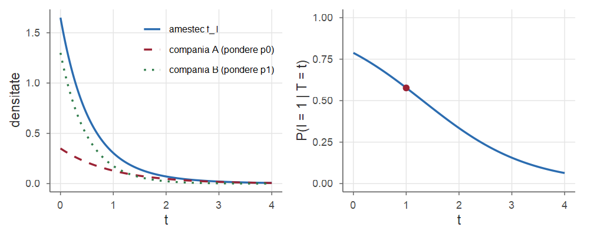
\(p_0=0.35\), \(\lambda_0=1\), \(\lambda_1=2\). Stânga: densitatea lui \(T\) (amestec) și cele două componente ponderate. Dreapta: probabilitatea a posteriori \(\PP(I=1\mid T=t)\).
Media unei funcții de un vector aleator continuu
Teorema 25 (Media unei funcții de un vector aleator continuu)
Dacă \((X,Y)\) are densitatea comună \(f_{X,Y}\) și \(g:\R^2\to\R\), atunci (când integrala converge absolut) \[ \E[g(X,Y)]=\iint_{\R^2}g(x,y)\,f_{X,Y}(x,y)\dd x\dd y . \] În particular \(\E[XY]=\iint xy\,f_{X,Y}(x,y)\dd x\dd y\), iar media este liniară: \(\E[aX+bY]=a\E[X]+b\E[Y]\).
Teorema este analogul continuu al Teoremei 10 (demonstrația generală folosește teoria integralei Lebesgue și o omitem).
Liniaritatea mediei are loc pentru orice variabile aleatoare cu medie finită, indiferent dacă sunt sau nu independente — o proprietate pe care o vom folosi în mod repetat.
Exemplu: distanța medie dintre două puncte
Exemplul 13 (Distanța medie dintre două puncte aleatoare din [0,1])
Fie \(X,Y\sim\Unif(0,1)\) independente; calculăm \(\E|X-Y|\). Din independență, \(f_{X,Y}=\Ind_{[0,1]^2}\) și, prin simetrie, \[ \begin{aligned} \E|X-Y|&=\iint_{[0,1]^2}|x-y|\dd x\dd y=\int_0^1\!\!\int_y^1(x-y)\dd x\dd y+\int_0^1\!\!\int_0^y(y-x)\dd x\dd y\\ &=2\int_0^1\!\!\int_y^1(x-y)\dd x\dd y=2\int_0^1\frac{(1-y)^2}{2}\dd y=\frac13, \end{aligned} \] cele două integrale fiind egale prin simetrie (schimbarea rolurilor lui \(x\) și \(y\)).
Media condiționată (cazul general)
Definiția 26 (Media condiționată)
Fie \(X\) continuă și \(A\) cu \(\PP(A)>0\). Media condiționată a lui \(X\) la \(A\) este \(\E[X\mid A]=\int_{-\infty}^{+\infty}x\,f_{X\mid A}(x)\dd x\). Dacă \(A=\{Y=y\}\), cu \(Y\) continuă (\(f_Y(y)>0\)), media condiționată a lui \(X\) la \(Y=y\) este \[ \E[X\mid Y=y]=\int_{-\infty}^{+\infty}x\,f_{X\mid Y}(x\mid y)\dd x . \]
Media condiționată este media unei repartiții (cea condiționată), deci are toate proprietățile mediei obișnuite: este liniară, \(\E[g(X)\mid A]=\int g(x)f_{X\mid A}(x)\dd x\) etc.
Formula probabilității totale pentru medii
Formula probabilității totale se transferă mediilor: înmulțind cu \(x\) relația din Propoziția 17 și integrând, pentru o partiție \(A_1,\dots,A_n\): \[ \E[X]=\sum_{i=1}^n\E[X\mid A_i]\,\PP(A_i), \] iar dacă \(Y\) este continuă, \[ \E[X]=\int_{-\infty}^{+\infty}\E[X\mid Y=y]\,f_Y(y)\dd y . \]
Metroul (Exemplul 9): \(\E[Y\mid A]=5/2\) și \(\E[Y\mid B]=15/2\) (medii de uniforme), deci \[ \E[Y]=\frac52\cdot\frac14+\frac{15}2\cdot\frac34=\frac{50}8=6.25\text{ minute}, \] fără a calcula vreo integrală.
Media condiționată ca variabilă aleatoare
Definiția 27 (Media condiționată ca variabilă aleatoare)
Fie \(g(y)=\E[X\mid Y=y]\). Media condiționată a lui \(X\) la \(Y\), \(\E[X\mid Y]\), este variabila aleatoare \(g(Y)\). Analog, varianța condiționată \(\Var(X\mid Y)\) este \(v(Y)\), unde \(v(y)=\Var(X\mid Y=y)=\E[X^2\mid Y=y]-\big(\E[X\mid Y=y]\big)^2\); adică \(\Var(X\mid Y)=\E[X^2\mid Y]-\big(\E[X\mid Y]\big)^2\).
Atenție!
Nu confundați \(\E[X\mid Y=y]\), un număr (depinzând de \(y\)), cu \(\E[X\mid Y]\), o variabilă aleatoare (funcție de \(Y\)). Calculăm \(\E[X\mid Y=y]\) ca funcție de \(y\) și apoi înlocuim \(y\) cu \(Y\).
Exemplu: media condiționată pe disc
Exemplul 14 (Media condiționată pe disc)
Pentru \((X,Y)\sim\Unif(D)\) (Exemplul 10), \(X\mid Y=y\sim\Unif(-a,a)\), \(a=\sqrt{r^2-y^2}\), cu media \(0\) și varianța \(\frac{(2a)^2}{12}=\frac{a^2}{3}\), deci
\[ \E[X\mid Y=y]=0,\quad \Var(X\mid Y=y)=\frac{r^2-y^2}{3},\qquad\text{deci}\qquad \E[X\mid Y]=0,\quad \Var(X\mid Y)=\frac{r^2-Y^2}{3}. \] Media condiționată nu depinde de \(Y\), dar varianța condiționată depinde: variabilele sunt dependente.
Legile lui Adam și Eve
Numite, după Blitzstein și Hwang, legea lui Adam și legea lui Eve (inițialele lui Expectation și Variance: „EVVE” \(=\E[\Var]+\Var(\E)\)).
Teorema 28 (Proprietățile mediei condiționate)
Fie \(X\) și \(Y\) două variabile aleatoare (cu \(\E[X^2]<\infty\)). Atunci:
(legea mediei iterate, legea lui Adam) \(\ \E\big[\E[X\mid Y]\big]=\E[X]\);
(legea varianței totale, legea lui Eve) \(\ \Var(X)=\E\big[\Var(X\mid Y)\big]+\Var\big(\E[X\mid Y]\big)\);
pentru orice funcție \(h\), \(\E[h(Y)X\mid Y]=h(Y)\,\E[X\mid Y]\) („ce este cunoscut iese în afara mediei”);
dacă \(X\indep Y\), atunci \(\E[X\mid Y]=\E[X]\).
Adam și Eve — demonstrație a)
Demonstrație.
În cazul continuu, cu \(g(y)=\E[X\mid Y=y]\) și regula de înmulțire, \[ \begin{aligned} \E[g(Y)]&=\int g(y)f_Y(y)\dd y=\int\!\!\Big(\int x\,f_{X\mid Y}(x\mid y)\dd x\Big)f_Y(y)\dd y\\ &=\iint x\,f_{X\mid Y}(x\mid y)f_Y(y)\dd x\dd y=\iint x\,f_{X,Y}(x,y)\dd x\dd y=\E[X] . \end{aligned} \] Cazul discret este Propoziția 12.
Știind \(Y=y\), \(h(Y)=h(y)\) este o constantă, deci \(\E[h(Y)X\mid Y=y]=h(y)\E[X\mid Y=y]\).
Dacă \(X\indep Y\), repartiția condiționată a lui \(X\) la \(Y=y\) coincide cu repartiția lui \(X\), deci \(\E[X\mid Y=y]=\E[X]\).
■
Adam și Eve — demonstrație b)
Demonstrație.
- Din definiția varianței condiționate și din a), aplicat lui \(X^2\), \[ \E\big[\Var(X\mid Y)\big]=\E\big[\E[X^2\mid Y]\big]-\E\big[(\E[X\mid Y])^2\big]=\E[X^2]-\E\big[(\E[X\mid Y])^2\big] . \] Pe de altă parte, din nou cu a), \[ \Var\big(\E[X\mid Y]\big)=\E\big[(\E[X\mid Y])^2\big]-\big(\E[\E[X\mid Y]]\big)^2=\E\big[(\E[X\mid Y])^2\big]-(\E[X])^2 . \] Adunând, termenii \(\E[(\E[X\mid Y])^2]\) se reduc și obținem \(\E[X^2]-(\E[X])^2=\Var(X)\).
■
Interpretare: variabilitatea din interiorul grupurilor date de \(Y\) + variabilitatea dintre grupuri.
Legea lui Eve pe disc; cel mai bun predictor
Pentru discul din Exemplul 14: \(\Var(X)=\E\big[\frac{r^2-Y^2}{3}\big]+\Var(0)=\frac{r^2-\E[Y^2]}{3}\). Prin simetrie \(\E[X^2]=\E[Y^2]=\frac12\E[X^2+Y^2]=\frac{r^2}{4}\) (Exercițiul 12), deci \(\Var(X)=\frac{r^2-r^2/4}{3}=\frac{r^2}{4}\).
Interpretarea geometrică. \(\E[X\mid Y]\) este funcția de \(Y\) care aproximează cel mai bine \(X\) în sensul erorii pătratice medii.
Propoziția 29 (Media condiționată ca cel mai bun predictor)
Pentru orice funcție \(h\) (cu \(\E[h(Y)^2]<\infty\)), \[ \E\big[(X-\E[X\mid Y])^2\big]\le\E\big[(X-h(Y))^2\big],\qquad\text{adică}\qquad \E[X\mid Y]=\argmin_{h}\ \E\big[(X-h(Y))^2\big]. \]
Cel mai bun predictor — demonstrație
Demonstrație. Fie \(g(Y)=\E[X\mid Y]\). Scriem \(X-h(Y)=(X-g(Y))+(g(Y)-h(Y))\) și dezvoltăm pătratul: \[ \E[(X-h(Y))^2]=\E[(X-g(Y))^2]+\E[(g(Y)-h(Y))^2]+2\E\big[(g(Y)-h(Y))(X-g(Y))\big]. \] Cu legea lui Adam și proprietatea c) din Teorema 28, ultimul termen este \(2\E\big[(g(Y)-h(Y))\,\E[X-g(Y)\mid Y]\big]=2\E\big[(g(Y)-h(Y))(g(Y)-g(Y))\big]=0\). Deci \(\E[(X-h(Y))^2]=\E[(X-g(Y))^2]+\E[(g(Y)-h(Y))^2]\ge\E[(X-g(Y))^2]\).■
- Cu \(\langle U,V\rangle=\E[UV]\), \(\E[X\mid Y]\) este proiecția ortogonală a lui \(X\) pe „planul” funcțiilor de \(Y\).
- Regresia liniară: dacă \(\E[Y\mid X]=a+bX\) (\(Y=a+bX+\varepsilon\), \(\E[\varepsilon\mid X]=0\)), dreapta \(a+bx\) este cel mai bun predictor al lui \(Y\) (Cursul 14).
Sume aleatoare: suma cheltuită într-un magazin
Exemplul 15 (Suma totală cheltuită într-un magazin)
Într-un magazin intră într-o zi \(N\) clienți (\(N\) aleatoare, cu valori în \(\{0,1,2,\dots\}\)); clientul \(i\) cheltuie \(X_i\). Presupunem \(X_1,X_2,\dots\) independente, identic repartizate, cu media \(\mu\) și varianța \(\sigma^2\), independente de \(N\). Suma totală este \[ T=\sum_{i=1}^{N}X_i ,\qquad T(\omega)=\sum_{i=1}^{N(\omega)}X_i(\omega). \] Numărul de termeni este aleator, deci nu putem aplica direct liniaritatea; condiționăm la \(N\). Știind \(N=n\), suma are un număr fix de termeni, independenți de \(N\): \[ \E[T\mid N=n]=\E\Big[\sum_{i=1}^nX_i\,\Big|\,N=n\Big]=\sum_{i=1}^n\E[X_i]=n\mu, \qquad \Var(T\mid N=n)=n\sigma^2 . \] Așadar \(\E[T\mid N]=N\mu\) și \(\Var(T\mid N)=N\sigma^2\).
Media și varianța unei sume aleatoare
Propoziția 30 (Media și varianța unei sume aleatoare)
Fie \(N\) cu valori în \(\N\) și \(X_1,X_2,\dots\) i.i.d., cu \(\E[X_1]=\mu\), \(\Var(X_1)=\sigma^2\), independente de \(N\). Atunci \(T=\sum_{i=1}^NX_i\) verifică \[ \E[T]=\E[N]\,\E[X_1]\quad\text{(identitatea lui Wald)},\qquad \Var(T)=\E[N]\Var(X_1)+\big(\E[X_1]\big)^2\Var(N). \]
Demonstrație. Cu legea lui Adam, \(\E[T]=\E[\E[T\mid N]]=\E[N\mu]=\mu\E[N]\). Cu legea lui Eve, \(\Var(T)=\E[\Var(T\mid N)]+\Var(\E[T\mid N])=\E[N\sigma^2]+\Var(N\mu)=\sigma^2\E[N]+\mu^2\Var(N)\).■
Sume aleatoare — exemplu numeric
Primul termen al varianței provine din variabilitatea sumelor individuale, al doilea din variabilitatea numărului de clienți. Pentru \(N\sim\Pois(\lambda)\): \(\E[N]=\Var(N)=\lambda\) și \(\Var(T)=\lambda(\sigma^2+\mu^2)=\lambda\E[X_1^2]\).
Pentru \(\lambda=50\) clienți pe zi și \(X_i\sim\Exp\) cu media \(\mu=30\) lei (\(\sigma=30\)): \[ \E[T]=50\cdot30=1500\text{ lei},\qquad \Var(T)=50\cdot(900+900)=90000,\qquad \sigma_T=300\text{ lei}. \]
Covarianța
Pentru a măsura cât de mult „variază împreună” două variabile:
Definiția 31 (Covarianța)
Fie \(X\) și \(Y\) cu \(\E[X^2],\E[Y^2]<\infty\). Se numește covarianța dintre \(X\) și \(Y\) \[ \Cov(X,Y)=\E\big[(X-\E[X])(Y-\E[Y])\big]. \]
- Dacă valorile mari ale lui \(X\) apar de regulă împreună cu valori mari ale lui \(Y\), \((X-\E X)(Y-\E Y)\) este mai des pozitiv și \(\Cov(X,Y)>0\); dacă valorile mari ale uneia însoțesc valori mici ale celeilalte, \(\Cov(X,Y)<0\).
- \(\Cov(X,X)=\E\big[(X-\E[X])^2\big]=\Var(X)\).
- Formula de calcul (dezvoltând produsul): \[ \Cov(X,Y)=\E[XY]-\E[X]\,\E[Y]. \]
Independență și necorelare
Definiția 32 (Variabile necorelate)
Spunem că \(X\) și \(Y\) sunt necorelate dacă \(\Cov(X,Y)=0\).
Propoziția 33 (Independența implică necorelarea)
Dacă \(X\indep Y\) (și au momente de ordinul doi finite), atunci \(\Cov(X,Y)=0\).
Demonstrație. Din Propoziția 22, \(\E[XY]=\E[X]\E[Y]\), deci, cu formula de calcul, \(\Cov(X,Y)=0\).■
Necorelarea nu implică independența
Exemplul 16 (Necorelarea nu implică independența)
Fie \(X\sim\Norm(0,1)\) și \(Y=X^2\). Evident, \(X\) și \(Y\) nu sunt independente: \(Y\) este complet determinată de \(X\) (de exemplu \(\PP(X>1,\ Y\le1)=0\ne\PP(X>1)\PP(Y\le1)\)). Totuși \(\E[X]=0\), deci \(\E[X]\E[Y]=0\), iar \[ \E[XY]=\E[X^3]=\int_{-\infty}^{+\infty}x^3\,\frac{e^{-x^2/2}}{\sqrt{2\pi}}\dd x=0 \] (integrand impar, domeniu simetric). Deci \(\Cov(X,Y)=0\): necorelate, dar dependente.
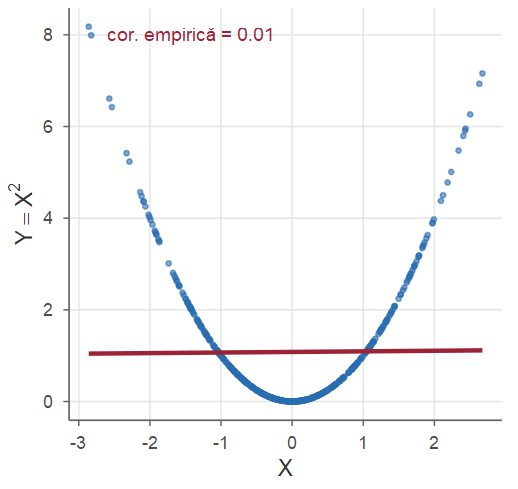
Proprietățile covarianței
Propoziția 34 (Proprietățile covarianței)
Pentru \(X,Y,Z,X_1,\dots,X_n\) cu momente de ordinul doi finite și \(a,b\in\R\):
\(\Cov(X,X)=\Var(X)\); b) \(\Cov(X,a)=0\); c) \(\Cov(X,Y)=\Cov(Y,X)\) (simetrie);
\(\Cov(a+bX,Y)=b\Cov(X,Y)\); e) \(\Cov(X+Y,Z)=\Cov(X,Z)+\Cov(Y,Z)\);
\(\Var(X+Y)=\Var(X)+\Var(Y)+2\Cov(X,Y)\);
\(\Var(X_1+\dots+X_n)=\sum_{i=1}^n\Var(X_i)+2\sum_{i<j}\Cov(X_i,X_j)\).
În particular, dacă \(X_1,\dots,X_n\) sunt necorelate două câte două (de exemplu independente), varianța sumei este suma varianțelor: pentru \(X\sim\Bin(n,p)\), sumă de \(n\) variabile \(\Bern(p)\) independente, \(\Var(X)=np(1-p)\).
Proprietățile covarianței — demonstrație
Demonstrație. a)–c) sunt imediate din definiție și din formula de calcul. Pentru d) și e) folosim formula de calcul și liniaritatea mediei: \[ \begin{aligned} \Cov(a+bX,Y)&=\E[(a+bX)Y]-\E[a+bX]\E[Y]=a\E Y+b\E[XY]-a\E Y-b\E X\E Y=b\Cov(X,Y),\\ \Cov(X+Y,Z)&=\E[XZ]+\E[YZ]-(\E X+\E Y)\E Z=\Cov(X,Z)+\Cov(Y,Z). \end{aligned} \] Covarianța este deci biliniară. Atunci \[ \begin{aligned} \Var(X+Y)&=\Cov(X+Y,X+Y)=\Cov(X,X)+\Cov(X,Y)+\Cov(Y,X)+\Cov(Y,Y)\\ &=\Var(X)+\Var(Y)+2\Cov(X,Y), \end{aligned} \] iar g) se obține la fel, dezvoltând \(\Cov\big(\sum_iX_i,\sum_jX_j\big)=\sum_{i,j}\Cov(X_i,X_j)\).■
Coeficientul de corelație
Covarianța depinde de unitățile de măsură (din metri în centimetri se înmulțește cu 100); o normalizăm.
Definiția 35 (Coeficientul de corelație)
Fie \(X\) și \(Y\) cu varianțe finite și nenule. Coeficientul de corelație (Pearson) este \[ \rho(X,Y)=\frac{\Cov(X,Y)}{\sqrt{\Var(X)}\,\sqrt{\Var(Y)}} . \]
Cu \(\mu_X,\sigma_X,\mu_Y,\sigma_Y\) mediile și abaterile standard, \[ \rho(X,Y)=\frac{\E[(X-\mu_X)(Y-\mu_Y)]}{\sigma_X\sigma_Y}=\E\Big[\frac{X-\mu_X}{\sigma_X}\cdot\frac{Y-\mu_Y}{\sigma_Y}\Big]: \] corelația este covarianța variabilelor standardizate. Pentru \(a,c\ne0\), \(\rho(aX+b,cY+d)=\sgn(ac)\,\rho(X,Y)\): nu depinde de unitățile de măsură.
Mărginirea coeficientului de corelație
Teorema 36 (Mărginirea coeficientului de corelație)
Pentru orice \(X,Y\) cu varianțe finite și nenule, \(|\rho(X,Y)|\le 1\). Egalitatea \(|\rho(X,Y)|=1\) are loc dacă și numai dacă (cu probabilitate 1) \(Y=aX+b\), cu \(a\ne0\); mai precis, \(\rho=1\) dacă \(a>0\) și \(\rho=-1\) dacă \(a<0\).
Demonstrație. Putem presupune (standardizând) \(\E[X]=\E[Y]=0\), \(\Var(X)=\Var(Y)=1\), deci \(\E[X^2]=\E[Y^2]=1\) și \(\rho=\E[XY]\). Pentru orice \(\lambda\in\R\), \[ 0\le\E\big[(X+\lambda Y)^2\big]=\lambda^2\E[Y^2]+2\lambda\E[XY]+\E[X^2]=\lambda^2+2\lambda\rho+1 . \] Un polinom de gradul doi nenegativ pentru orice \(\lambda\) are \(\Delta=4\rho^2-4\le0\), adică \(\rho^2\le1\).■
Cazul de egalitate — demonstrație
Demonstrație. Fie \(\rho=1\). Atunci \(\E[(X+\lambda Y)^2]=(\lambda+1)^2\), iar pentru \(\lambda=-1\), \(\E[(X-Y)^2]=0\). O variabilă nenegativă cu media 0 este nulă cu probabilitate 1, deci \(\PP(X=Y)=1\). Revenind la variabilele inițiale, \(\frac{X-\mu_X}{\sigma_X}=\frac{Y-\mu_Y}{\sigma_Y}\) cu probabilitate 1: \[ Y=\frac{\sigma_Y}{\sigma_X}X+\frac{\sigma_X\mu_Y-\sigma_Y\mu_X}{\sigma_X}=aX+b,\qquad a=\frac{\sigma_Y}{\sigma_X}>0 . \] Cazul \(\rho=-1\): analog, cu \(\lambda=1\), obținând \(a<0\). Reciproc, dacă \(Y=aX+b\), atunci \(\Cov(X,Y)=a\sigma_X^2\), \(\sigma_Y=|a|\sigma_X\) și \(\rho=a/|a|=\pm1\).■
\(\rho\) măsoară cât de aproape de o dreaptă se află punctele \((X,Y)\): \(\rho>0\) — tendință liniară crescătoare, \(\rho<0\) — descrescătoare, \(\rho=0\) — absența unei tendințe liniare (dar nu neapărat independență!).
Fără standardizare, aceeași idee dă inegalitatea Cauchy–Schwarz \((\E[XY])^2\le\E[X^2]\E[Y^2]\) (Cursul 7).
Corelația — ilustrare
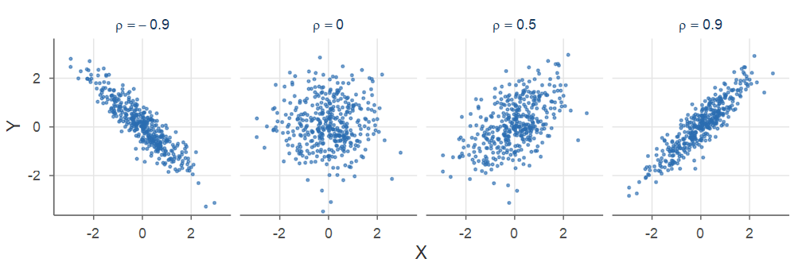
Nori de câte 400 de puncte din repartiția normală bidimensională standard, pentru diferite valori ale lui \(\rho\).
Exemplu: covarianța pentru un tabel de repartiție
Exemplul 17 (Covarianța și corelația pentru un tabel de repartiție)
Pentru Exemplul 4: \(\E[X]=\frac{37}{18}\), \(\E[Y]=\frac{13}{18}\), \(\E[XY]=\frac{29}{18}\), deci \[ \Cov(X,Y)=\frac{29}{18}-\frac{37}{18}\cdot\frac{13}{18}=\frac{522-481}{324}=\frac{41}{324}\approx0.127 . \] Apoi \(\E[X^2]=\frac{6+20+63}{18}=\frac{89}{18}\), \(\E[Y^2]=\frac{3+32}{18}=\frac{35}{18}\), \(\Var(X)=\frac{89}{18}-\big(\frac{37}{18}\big)^2=\frac{233}{324}\), \(\Var(Y)=\frac{35}{18}-\big(\frac{13}{18}\big)^2=\frac{461}{324}\) și \[ \rho(X,Y)=\frac{41}{\sqrt{233\cdot461}}\approx0.125:\ \text{o corelație pozitivă slabă.} \]
Covarianța pentru tabel — verificare în R
Corelația slabă (\(\approx0.125\)) se vede și în figura tabelului: nu există o tendință liniară clară.
Corelația ca un cosinus
De ce tocmai media unui produs măsoară legătura dintre două variabile? Privim variabilele aleatoare ca vectori, cu produsul scalar \(\langle U,V\rangle=\E[UV]\) și „lungimea” \(\|U\|=\sqrt{\E[U^2]}\).
Pentru variabilele centrate \(U=X-\mu_X\) și \(V=Y-\mu_Y\): \(\langle U,V\rangle=\Cov(X,Y)\), \(\|U\|=\sigma_X\), \(\|V\|=\sigma_Y\), deci \[ \rho(X,Y)=\frac{\Cov(X,Y)}{\sigma_X\,\sigma_Y}=\frac{\langle U,V\rangle}{\|U\|\,\|V\|}=\cos\theta . \]
- \(|\rho|\le1\) (Teorema 36): un cosinus este între \(-1\) și \(1\) — inegalitatea Cauchy–Schwarz;
- \(|\rho|=1\): vectori coliniari; \(\rho=0\) (necorelare): vectori perpendiculari.
Corelația calculată din date
Definiția 37 (Coeficientul de corelație empiric)
Fie \((x_1,y_1),\dots,(x_n,y_n)\) perechi de date, cu mediile \(\bar x\) și \(\bar y\) (șirurile \(x\) și \(y\) nefiind constante). Coeficientul de corelație empiric este \[ r=\frac{\sum_{i=1}^n(x_i-\bar x)(y_i-\bar y)}{\sqrt{\sum_{i=1}^n(x_i-\bar x)^2}\,\sqrt{\sum_{i=1}^n(y_i-\bar y)^2}}=\frac{x_c\cdot y_c}{\|x_c\|\,\|y_c\|}, \] adică cosinusul unghiului dintre vectorii centrați \(x_c=(x_i-\bar x)_i\) și \(y_c=(y_i-\bar y)_i\) din \(\R^n\).
- În R:
cor(x, y). - \(r\) este coeficientul de corelație al perechii \((X,Y)\) care ia fiecare valoare \((x_i,y_i)\) cu probabilitatea \(1/n\), deci \(|r|\le1\), cu egalitate exact când punctele sunt pe o dreaptă.
Exemplu: gusturile a doi utilizatori
Exemplul 18 (Cât de asemănătoare sunt gusturile a doi utilizatori?)
Note la aceleași cinci filme: \(x=(1,2,3,4,5)\), \(y=(2,1,4,3,5)\). Mediile sunt \(3\), deci \(x_c=(-2,-1,0,1,2)\), \(y_c=(-1,-2,1,0,2)\), \(x_c\cdot y_c=8\), \(\|x_c\|^2=\|y_c\|^2=10\) și \(r=\frac{8}{10}=0.8\) (\(\theta\approx37^\circ\)): gusturi apropiate.
#> cosinus cor cos_necentrat
#> 0.8000 0.8000 0.9636A treia valoare: similaritatea cosinus (vectori necentrați), folosită la compararea documentelor.
Partea IV — Normala bidimensională; sume; exerciții rezolvate
Repartiția normală bidimensională
Definiția 38 (Repartiția normală bidimensională)
\((X,Y)\) are repartiție normală bidimensională de parametri \(\mu_1,\mu_2\in\R\), \(\sigma_1,\sigma_2>0\), \(\rho\in(-1,1)\) dacă are densitatea \[ f_{X,Y}(x,y)=\frac{1}{2\pi\sigma_1\sigma_2\sqrt{1-\rho^2}}\exp\Big\{-\frac{u^2-2\rho uv+v^2}{2(1-\rho^2)}\Big\},\qquad u=\frac{x-\mu_1}{\sigma_1},\ v=\frac{y-\mu_2}{\sigma_2}. \]
Se poate arăta (completând pătratul în exponent) că:
- marginalele sunt normale: \(X\sim\Norm(\mu_1,\sigma_1^2)\), \(Y\sim\Norm(\mu_2,\sigma_2^2)\), iar \(\rho(X,Y)=\rho\);
- \(Y\mid X=x\sim\Norm\big(\mu_2+\rho\frac{\sigma_2}{\sigma_1}(x-\mu_1),\ \sigma_2^2(1-\rho^2)\big)\): \(\E[Y\mid X]\) este liniară în \(X\) (dreapta de regresie), iar varianța condiționată nu depinde de \(x\).
Normala bidimensională — proprietăți și ilustrare
- \(X\) și \(Y\) sunt independente dacă și numai dacă \(\rho=0\) (pentru \(\rho=0\) exponentul se descompune într-o sumă și densitatea se factorizează);
- dacă \(Z_1,Z_2\sim\Norm(0,1)\) independente, \(X=\mu_1+\sigma_1Z_1\), \(Y=\mu_2+\sigma_2\big(\rho Z_1+\sqrt{1-\rho^2}\,Z_2\big)\) are această repartiție (așa se simulează).
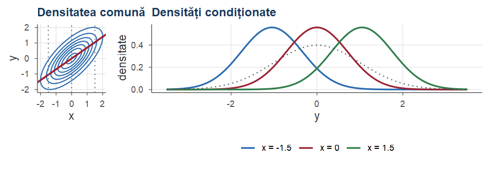
Vectorul medie și matricea de covarianță
O observație are adesea \(d\) componente (pixelii unei imagini, indicatorii unui server): mediile, varianțele și covarianțele se organizează într-un vector și într-o matrice.
Definiția 39 (Vectorul medie și matricea de covarianță)
Fie \(\mathbf X=(X_1,\dots,X_d)^\top\) un vector aleator ale cărui componente au varianțe finite. Vectorul medie și matricea de covarianță ale lui \(\mathbf X\) sunt \[ \mu=\E[\mathbf X]=\begin{pmatrix}\E[X_1]\\ \vdots\\ \E[X_d]\end{pmatrix},\qquad \Sigma=\Cov(\mathbf X)=\begin{pmatrix} \Var(X_1) & \cdots & \Cov(X_1,X_d)\\ \vdots & \ddots & \vdots\\ \Cov(X_d,X_1) & \cdots & \Var(X_d) \end{pmatrix}, \] adică \(\Sigma_{ij}=\Cov(X_i,X_j)\): varianțele pe diagonală, covarianțele în afara ei.
Proprietățile matricei de covarianță
Propoziția 40 (Proprietățile matricei de covarianță)
Fie \(\mathbf X\) un vector aleator cu vectorul medie \(\mu\) și matricea de covarianță \(\Sigma\).
\(\Sigma\) este simetrică; dacă \(X_1,\dots,X_d\) sunt independente (sau doar necorelate), \(\Sigma\) este diagonală.
Pentru orice \(\mathbf a\in\R^d\), \(\mathbf a^\top\mathbf X=a_1X_1+\dots+a_dX_d\) are media \(\mathbf a^\top\mu\) și varianța \[ \Var(\mathbf a^\top\mathbf X)=\sum_{i=1}^d\sum_{j=1}^da_ia_j\Cov(X_i,X_j)=\mathbf a^\top\Sigma\,\mathbf a\ \ge0, \] deci \(\Sigma\) este pozitiv semidefinită.
Dacă \(A\) este o matrice \(m\times d\) și \(\mathbf b\in\R^m\), atunci \(\mathbf Y=A\mathbf X+\mathbf b\) are \(\E[\mathbf Y]=A\mu+\mathbf b\) și \(\Cov(\mathbf Y)=A\,\Sigma\,A^\top\).
Exemplu: două operații cu o etapă comună
Exemplul 19 (Două operații cu o etapă comună)
Duratele (ms) a două operații: \(X_1=U+W\), \(X_2=V+W\), cu \(W\) o etapă comună și \(U,V,W\) independente, cu mediile \(1,6,3\) și varianțele \(1,6,3\). Atunci \(\mathbf X=A\,(U,V,W)^\top\), cu \[ A=\begin{pmatrix}1&0&1\\0&1&1\end{pmatrix},\quad \mu=A\begin{pmatrix}1\\6\\3\end{pmatrix}=\begin{pmatrix}4\\9\end{pmatrix},\quad \Sigma=A\begin{pmatrix}1&0&0\\0&6&0\\0&0&3\end{pmatrix}A^\top=\begin{pmatrix}4&3\\3&9\end{pmatrix}. \] Etapa comună corelează duratele: \(\Cov(X_1,X_2)=\Var(W)=3\), \(\rho=\frac{3}{2\cdot3}=0.5\). Durata totală \(X_1+X_2=\mathbf a^\top\mathbf X\), \(\mathbf a=(1,1)^\top\), are varianța \(\mathbf a^\top\Sigma\,\mathbf a=4+9+2\cdot3=19\) (nu \(13\)).
Simularea vectorilor normali corelați
rnorm produce valori independente; corelația se introduce printr-o transformare liniară.
Propoziția 41 (Vectori normali cu medie și matrice de covarianță date)
Fie \(\mathbf Z=(Z_1,\dots,Z_d)^\top\), cu \(Z_i\sim\Norm(0,1)\) independente, \(\mu\in\R^d\) și \(L\) o matrice \(d\times d\); notăm \(\Sigma=LL^\top\). Atunci \(\mathbf X=\mu+L\,\mathbf Z\) are vectorul medie \(\mu\) și matricea de covarianță \(\Sigma\), iar componentele sale sunt normale (Propoziția 43). Pentru \(d=2\) și \[ L=\begin{pmatrix}\sigma_1&0\\ \rho\,\sigma_2&\sigma_2\sqrt{1-\rho^2}\end{pmatrix}\quad\text{avem}\quad LL^\top=\begin{pmatrix}\sigma_1^2&\rho\sigma_1\sigma_2\\ \rho\sigma_1\sigma_2&\sigma_2^2\end{pmatrix}, \] iar \(\mathbf X\) are repartiția normală bidimensională din Definiția 38.
De ce? \(\mathbf Z\) are media \(0\) și matricea de covarianță \(I_d\), deci \(\Cov(\mu+L\mathbf Z)=L\,I_d\,L^\top\) (proprietatea c).
Exemplu: înălțimi și greutăți simulate
Exemplul 20 (Înălțimi și greutăți simulate)
Vrem înălțimi (cm) și greutăți (kg) cu mediile \(170\) și \(70\), abaterile standard \(\sigma_1=8\), \(\sigma_2=10\) și corelația \(\rho=0.6\). Covarianța este \(0.6\cdot8\cdot10=48\), deci \[
\mu=\begin{pmatrix}170\\70\end{pmatrix},\quad \Sigma=\begin{pmatrix}64&48\\48&100\end{pmatrix},\quad
L=\begin{pmatrix}8&0\\ 0.6\cdot10&10\sqrt{1-0.6^2}\end{pmatrix}=\begin{pmatrix}8&0\\6&8\end{pmatrix}.
\] Înălțimea este \(X_1=170+8Z_1\), iar greutatea \(X_2=70+6Z_1+8Z_2\): \(6Z_1\) este partea „explicată” de înălțime, iar \(8Z_2\) variația proprie a greutății. \(L\) este factorul Cholesky al lui \(\Sigma\); în R: t(chol(Sigma)).
Înălțimi și greutăți simulate — în R
set.seed(3)
mu <- c(170, 70); Sigma <- matrix(c(64, 48, 48, 100), nrow = 2)
L <- t(chol(Sigma)); n <- 2000 # factorul Cholesky: (8 0; 6 8)
Z <- matrix(rnorm(2 * n), nrow = 2) # fiecare coloană: un vector Z
X <- t(mu + L %*% Z) # n linii: (înălțime, greutate)
round(c(medie = colMeans(X), ab_std = apply(X, 2, sd),
cov = cov(X)[1, 2], cor = cor(X)[1, 2]), 2)#> medie1 medie2 ab_std1 ab_std2 cov cor
#> 169.87 69.89 8.10 9.97 48.62 0.60O observație = o linie a matricei de date; colMeans, cov, cor estimează \(\mu\), \(\Sigma\) și corelațiile. Valorile sunt apropiate de cele cerute: \(170\) și \(70\); \(8\) și \(10\); \(48\); \(0.6\).
Norul de puncte și direcțiile principale
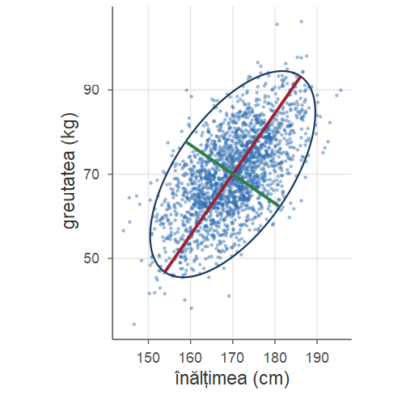
Cele 2000 de perechi simulate, elipsa în care vectorul se află cu probabilitatea \(0.95\) și direcțiile vectorilor proprii ai lui \(\Sigma\).
Observație
Direcția \(\mathbf a\), \(\|\mathbf a\|=1\), pe care \(\mathbf a^\top\mathbf X\) are varianța \(\mathbf a^\top\Sigma\,\mathbf a\) maximă este vectorul propriu al lui \(\Sigma\) pentru cea mai mare valoare proprie \(\lambda_1\) (aici \(\lambda_1\approx133.3\) din \(164\), adică \(81\%\)). Este ideea analizei în componente principale (PCA): păstrăm doar proiecțiile pe direcțiile de împrăștiere maximă.
Sume de variabile independente: convoluția
Dacă \(X\indep Y\) și le cunoaștem repartițiile, care este repartiția lui \(Z=X+Y\)?
Propoziția 42 (Formula de convoluție)
Fie \(X\indep Y\) și \(Z=X+Y\).
Dacă \(X\) și \(Y\) sunt discrete, cu valori întregi, \(\displaystyle p_Z(z)=\sum_{x}p_X(x)\,p_Y(z-x)\).
Dacă \(X\) și \(Y\) sunt continue, cu densitățile \(f_X\), \(f_Y\), atunci \(Z\) este continuă, cu densitatea \(f_Z(z)=\displaystyle\int_{-\infty}^{+\infty}f_X(x)\,f_Y(z-x)\dd x\).
Media și varianța sumei le cunoaștem deja; repartiția completă se obține prin convoluție.
Formula de convoluție — demonstrație
Demonstrație.
- Cu formula probabilității totale după valorile lui \(X\) și independența, \(\PP(Z=z)=\sum_x\PP(X=x,\ Y=z-x)=\sum_x p_X(x)p_Y(z-x)\).
- Condiționând la \(X=x\): \(\PP(Z\le z\mid X=x)=\PP(Y\le z-x)=F_Y(z-x)\) (independență), deci \(F_Z(z)=\int F_Y(z-x)f_X(x)\dd x\). Derivând în raport cu \(z\) (sub integrală), \(f_Z(z)=\int f_Y(z-x)f_X(x)\dd x\).
■
Observație
Interpretare discretă: pentru a obține suma \(z\), prima variabilă ia o valoare \(x\), iar a doua trebuie să ia exact \(z-x\); sumăm după toate valorile posibile \(x\).
Suma a două variabile Poisson independente
Exemplul 21 (Suma a două variabile Poisson independente)
Fie \(X\sim\Pois(\lambda)\) și \(Y\sim\Pois(\mu)\) independente. Pentru \(n\ge0\), cu formula de convoluție și binomul lui Newton, \[ \PP(X+Y=n)=\sum_{k=0}^n e^{-\lambda}\frac{\lambda^k}{k!}\,e^{-\mu}\frac{\mu^{n-k}}{(n-k)!}=\frac{e^{-(\lambda+\mu)}}{n!}\sum_{k=0}^n\binom nk\lambda^k\mu^{n-k}=e^{-(\lambda+\mu)}\frac{(\lambda+\mu)^n}{n!}, \] deci \(X+Y\sim\Pois(\lambda+\mu)\).
Împreună cu descompunerea din Exemplul 3: sumele de variabile Poisson independente sunt Poisson, iar o variabilă Poisson „subțiată” aleator se descompune în variabile Poisson independente. Mai mult, \(X\mid X+Y=n\sim\Bin\big(n,\frac{\lambda}{\lambda+\mu}\big)\) (exercițiu).
Suma de variabile exponențiale independente
Exemplul 22 (Suma de variabile exponențiale independente)
Fie \(X,Y\sim\Exp(\lambda)\) independente. \(f_X(x)f_Y(z-x)\) este nenulă doar pentru \(x>0\) și \(z-x>0\), deci pentru \(z>0\), \[ f_{X+Y}(z)=\int_0^z\lambda e^{-\lambda x}\,\lambda e^{-\lambda(z-x)}\dd x=\lambda^2e^{-\lambda z}\int_0^z\dd x=\lambda^2z\,e^{-\lambda z}, \] adică \(X+Y\sim\GammaD(2,\lambda)\). Prin inducție, dacă \(X_1,\dots,X_n\sim\Exp(\lambda)\) sunt independente, \[ X_1+\dots+X_n\sim\GammaD(n,\lambda),\qquad f(z)=\frac{\lambda^n z^{n-1}}{(n-1)!}e^{-\lambda z},\ z>0 . \] Interpretare: dacă duratele dintre sosirile succesive sunt \(\Exp(\lambda)\) independente, momentul sosirii celui de-al \(n\)-lea client este \(\GammaD(n,\lambda)\).
Suma de variabile normale independente
Propoziția 43 (Suma de variabile normale independente)
Dacă \(X\sim\Norm(\mu_1,\sigma_1^2)\) și \(Y\sim\Norm(\mu_2,\sigma_2^2)\) sunt independente, atunci \(X+Y\sim\Norm(\mu_1+\mu_2,\ \sigma_1^2+\sigma_2^2)\). Mai general, orice combinație liniară \(a_1X_1+\dots+a_nX_n+b\) de variabile normale independente este normală.
Media și varianța sumei rezultă, desigur, și direct din liniaritatea mediei și din Propoziția 34; noutatea propoziției este că suma rămâne normală. Acest fapt va fi esențial în statistică (Cursul 8), de exemplu pentru repartiția mediei de selecție \(\Xbar\) a unui eșantion normal.
Suma de variabile normale independente — demonstrație
Demonstrație. Arătăm cazul \(X,Y\sim\Norm(0,1)\) (cazul general: prin transformări afine). Cu identitatea \(x^2+(z-x)^2=2\big(x-\frac z2\big)^2+\frac{z^2}{2}\), \[ f_{X+Y}(z)=\int_{\R}\frac{1}{2\pi}e^{-\frac{x^2+(z-x)^2}{2}}\dd x=\frac{1}{2\pi}e^{-\frac{z^2}{4}}\int_{\R} e^{-(x-z/2)^2}\dd x=\frac{1}{2\pi}e^{-\frac{z^2}{4}}\sqrt\pi=\frac{1}{\sqrt{2\pi\cdot2}}e^{-\frac{z^2}{2\cdot2}}, \] adică densitatea \(\Norm(0,2)\).■
Exercițiul: testarea tranzistorilor
Exercițiul 1 (Testarea tranzistorilor)
Un lot de 5 tranzistori conține 2 defecți. Tranzistorii sunt testați unul câte unul, într-o ordine aleatoare, până când ambii tranzistori defecți sunt identificați (un tranzistor poate fi identificat și prin deducție, fără a fi testat). Fie \(N_1\) numărul de teste până la identificarea primului defect și \(N_2\) numărul de teste suplimentare până la identificarea celui de-al doilea.
- Determinați repartiția comună a lui \((N_1,N_2)\) și repartițiile marginale.
- Sunt \(N_1\) și \(N_2\) independente?
- Calculați numărul mediu total de teste și \(\Cov(N_1,N_2)\).
Testarea tranzistorilor — soluție a)
Soluție
- Numerotăm tranzistorii în ordinea testării, \(T_1,\dots,T_5\). Perechea defectă este uniformă printre cele \(\binom52=10\) perechi. Pentru fiecare pereche:
- \((T_1,T_2)\): \((1,1)\); \((T_1,T_3)\): \((1,2)\); \((T_1,T_4)\), \((T_1,T_5)\): \((1,3)\) (după testarea lui \(T_4\) știm care este al doilea defect);
- \((T_2,T_3)\): \((2,1)\); \((T_2,T_4)\), \((T_2,T_5)\): \((2,2)\);
- \((T_3,T_4)\), \((T_3,T_5)\): \((3,1)\); \((T_4,T_5)\): după trei teste bune știm că \(T_4,T_5\) sunt defecți: \((3,0)\).
\[ \begin{array}{c|cccc|c} N_1\backslash N_2 & 0 & 1 & 2 & 3 & \Sigma\\ \hline 1 & 0 & 1/10 & 1/10 & 2/10 & 4/10\\ 2 & 0 & 1/10 & 2/10 & 0 & 3/10\\ 3 & 1/10 & 2/10 & 0 & 0 & 3/10\\ \hline \Sigma & 1/10 & 4/10 & 3/10 & 2/10 & 1 \end{array} \]
Testarea tranzistorilor — soluție b), c)
Soluție (continuare)
Marginalele: \[ N_1\sim\begin{pmatrix}1&2&3\\ \frac4{10}&\frac3{10}&\frac3{10}\end{pmatrix},\qquad N_2\sim\begin{pmatrix}0&1&2&3\\ \frac1{10}&\frac4{10}&\frac3{10}&\frac2{10}\end{pmatrix}. \] b) Nu: \(\PP(N_1=1,N_2=0)=0\ne\PP(N_1=1)\PP(N_2=0)=0.04\).
- \(\E[N_1]=0.4+0.6+0.9=1.9\), \(\E[N_2]=0.4+0.6+0.6=1.6\), deci numărul mediu total de teste este \(\E[N_1+N_2]=3.5\). Apoi \[ \E[N_1N_2]=1\cdot(0.1+0.2+0.6)+2\cdot(0.1+0.4)+3\cdot0.2=2.5,\qquad \Cov(N_1,N_2)=2.5-1.9\cdot1.6=-0.54: \] un prim defect găsit târziu înseamnă că mai rămân puține teste pentru al doilea.
Exercițiul: medie și varianță condiționată dintr-un tabel
Exercițiul 2 (Tabel de repartiție: medie și varianță condiționată)
Vectorul aleator \((X,Y)\) are repartiția comună \[ \begin{array}{c|ccc} X\backslash Y & 2 & 4 & 6\\ \hline 0 & 0.1 & 0.2 & 0.1\\ 1 & 0.1 & 0.1 & 0.1\\ 2 & 0.1 & 0.1 & 0\\ 3 & 0.05 & 0 & 0.05 \end{array} \] a) Determinați repartițiile marginale, \(\E[Y]\) și \(\Var(Y)\). b) Determinați repartițiile condiționate \(Y\mid X=1\) și \(X\mid Y=4\). c) Determinați \(\E[Y\mid X]\) și \(\Var(Y\mid X)\) și verificați legea varianței totale. d) Calculați coeficientul de corelație \(\rho(X,Y)\).
Medie și varianță condiționată — soluție a), b)
Soluție
Sumând pe linii, respectiv pe coloane, \[ X\sim\begin{pmatrix}0&1&2&3\\ 0.4&0.3&0.2&0.1\end{pmatrix},\qquad Y\sim\begin{pmatrix}2&4&6\\ 0.35&0.4&0.25\end{pmatrix}. \] \(\E[Y]=0.7+1.6+1.5=3.8\), \(\E[Y^2]=1.4+6.4+9=16.8\), deci \(\Var(Y)=16.8-3.8^2=2.36\).
Normalizăm linia \(x=1\) (suma \(0.3\)), respectiv coloana \(y=4\) (suma \(0.4\)): \[ Y\mid X=1\sim\begin{pmatrix}2&4&6\\ \frac13&\frac13&\frac13\end{pmatrix},\qquad X\mid Y=4\sim\begin{pmatrix}0&1&2&3\\ \frac12&\frac14&\frac14&0\end{pmatrix}. \]
Medie și varianță condiționată — soluție c)
Soluție (continuare)
- De exemplu, \(Y\mid X=0\sim\begin{pmatrix}2&4&6\\ 1/4&1/2&1/4\end{pmatrix}\), deci \(\E[Y\mid X=0]=4\), \(\Var(Y\mid X=0)=\big(1+8+9\big)-16=2\). Analog: \[ \begin{array}{c|cccc} x & 0 & 1 & 2 & 3\\ \hline \E[Y\mid X=x] & 4 & 4 & 3 & 4\\ \Var(Y\mid X=x) & 2 & 8/3 & 1 & 4\\ \PP(X=x) & 0.4 & 0.3 & 0.2 & 0.1 \end{array} \qquad\Rightarrow\qquad \E[Y\mid X]\sim\begin{pmatrix}3&4\\ 0.2&0.8\end{pmatrix}. \] Variabila \(\Var(Y\mid X)\) ia valorile \(1,2,\frac83,4\) cu probabilitățile \(0.2,0.4,0.3,0.1\).
Medie și varianță condiționată — verificarea legilor; d)
Soluție (continuare)
Legea lui Eve: \(\E[\Var(Y\mid X)]=0.2+0.8+0.8+0.4=2.2\) și \(\Var(\E[Y\mid X])=9\cdot0.2+16\cdot0.8-3.8^2=0.16\), iar suma lor este \(2.36=\Var(Y)\). Legea lui Adam: \(\E[\E[Y\mid X]]=0.6+3.2=3.8=\E[Y]\).
- \(\E[X]=1\), \(\E[X^2]=2\), \(\Var(X)=1\); \(\E[XY]=1\cdot1.2+2\cdot0.6+3\cdot0.4=3.6\); \(\Cov(X,Y)=3.6-3.8=-0.2\) și \(\rho(X,Y)=\frac{-0.2}{\sqrt{1\cdot2.36}}\approx-0.130\).
Q <- matrix(c(.1, .2, .1, .1, .1, .1, .1, .1, 0, .05, 0, .05), 4, byrow = TRUE)
xq <- 0:3; yq <- c(2, 4, 6); pXq <- rowSums(Q); pYq <- colSums(Q)
m <- (Q %*% yq) / pXq; v <- (Q %*% yq^2) / pXq - m^2 # E[Y|X=x], Var(Y|X=x)
c(EVar = sum(v * pXq), VarE = sum(m^2 * pXq) - sum(yq * pYq)^2) # 2.2 și 0.16
#> EVar VarE
#> 2.20 0.16Exercițiul: o densitate pe dreptunghi
Exercițiul 3 (O densitate pe dreptunghi)
Vectorul aleator \((X,Y)\) are densitatea \[ f_{X,Y}(x,y)=\begin{cases}k(x+y+1),& x\in[0,1],\ y\in[0,2],\\ 0,&\text{altfel.}\end{cases} \] a) Determinați constanta \(k\). b) Determinați densitățile marginale. Sunt \(X\) și \(Y\) independente? c) Determinați funcțiile de repartiție \(F_X\), \(F_Y\) și \(F_{X,Y}\). d) Determinați densitățile condiționate \(f_{X\mid Y}\) și \(f_{Y\mid X}\). e) Calculați \(\E[X\mid Y]\) și \(\Var(X\mid Y)\). f) Calculați coeficientul de corelație \(\rho(X,Y)\).
O densitate pe dreptunghi — soluție a), b)
Soluție
Din \(f_{X,Y}\ge0\), \(k\ge0\); din normalizare \[ 1=\int_0^1\!\!\int_0^2k(x+y+1)\dd y\dd x=k\int_0^1\Big(xy+\frac{y^2}{2}+y\Big)\Big|_0^2\dd x=k\int_0^1(2x+4)\dd x=5k, \] deci \(k=\frac15\).
Pentru \(x\in[0,1]\), \(f_X(x)=\int_0^2\frac{x+y+1}{5}\dd y=\frac{2x+4}{5}\); pentru \(y\in[0,2]\), \(f_Y(y)=\int_0^1\frac{x+y+1}{5}\dd x=\frac{1}{5}\big(\frac12+y+1\big)=\frac{2y+3}{10}\) (zero în rest).
Cum \(f_X(x)f_Y(y)=\frac{(2x+4)(2y+3)}{50}\ne\frac{x+y+1}{5}\) (în \((0,0)\): \(\frac{12}{50}\ne\frac15\)), \(X\) și \(Y\) nu sunt independente.
O densitate pe dreptunghi — soluție c)
Soluție (continuare)
- Integrând densitățile marginale: \[ F_X(x)=\begin{cases}0,&x<0,\\ \frac{x(x+4)}{5},&0\le x\le1,\\ 1,&x>1,\end{cases}\qquad F_Y(y)=\begin{cases}0,&y<0,\\ \frac{y(y+3)}{10},&0\le y\le2,\\ 1,&y>2.\end{cases} \] Pentru \(F_{X,Y}\): dacă \(x<0\) sau \(y<0\), \(F_{X,Y}=0\). Dacă \(x\in[0,1]\), \(y\in[0,2]\), \[ F_{X,Y}(x,y)=\int_0^x\!\!\int_0^y\frac{u+v+1}{5}\dd v\dd u=\frac15\int_0^x\Big(uy+\frac{y^2}{2}+y\Big)\dd u=\frac{xy(x+y+2)}{10}. \] În rest: \(F_{X,Y}(x,y)=F_Y(y)\) dacă \(x>1\), \(y\in[0,2]\); \(F_X(x)\) dacă \(x\in[0,1]\), \(y>2\); \(1\) dacă \(x>1\), \(y>2\).
O densitate pe dreptunghi — soluție d), e)
Soluție (continuare)
- Pentru \(y\in[0,2]\), respectiv \(x\in[0,1]\): \[ f_{X\mid Y}(x\mid y)=\frac{(x+y+1)/5}{(2y+3)/10}=\frac{2(x+y+1)}{2y+3},\ x\in[0,1];\qquad f_{Y\mid X}(y\mid x)=\frac{x+y+1}{2x+4},\ y\in[0,2]. \]
- Pentru \(y\in[0,2]\), \[ \E[X\mid Y=y]=\int_0^1x\,\frac{2(x+y+1)}{2y+3}\dd x=\frac{2}{2y+3}\Big(\frac13+\frac y2+\frac12\Big)=\frac{3y+5}{3(2y+3)}, \] deci \(\E[X\mid Y]=\frac{3Y+5}{3(2Y+3)}\). Analog, \(\E[X^2\mid Y=y]=\frac{4y+7}{6(2y+3)}\) și \[ \Var(X\mid Y=y)=\frac{4y+7}{6(2y+3)}-\frac{(3y+5)^2}{9(2y+3)^2}=\frac{6y^2+18y+13}{18(2y+3)^2}. \]
O densitate pe dreptunghi — soluție f)
Soluție (continuare)
- Din marginale: \(\E[X]=\int_0^1x\frac{2x+4}{5}\dd x=\frac{8}{15}\), \(\E[X^2]=\frac{11}{30}\), \(\E[Y]=\int_0^2y\frac{2y+3}{10}\dd y=\frac{17}{15}\), \(\E[Y^2]=\frac85\), deci \(\Var(X)=\frac{37}{450}\), \(\Var(Y)=\frac{71}{225}\). Din densitatea comună, \(\E[XY]=\int_0^1\!\int_0^2xy\frac{x+y+1}{5}\dd y\dd x=\frac35\). Astfel \[ \Cov(X,Y)=\frac35-\frac8{15}\cdot\frac{17}{15}=-\frac1{225},\qquad \rho(X,Y)=\frac{-1/225}{\sqrt{\frac{37}{450}\cdot\frac{71}{225}}}=-\sqrt{\frac{2}{2627}}\approx-0.0276 . \] Variabilele sunt dependente, dar aproape necorelate.
O densitate pe dreptunghi — verificare numerică
Momentele se verifică prin integrare numerică dublă (funcția I2, definită la începutul cursului):
f <- function(x, y) (x + y + 1) / 5
m <- sapply(list(function(x, y) x, function(x, y) y, function(x, y) x^2,
function(x, y) y^2, function(x, y) x * y),
function(g) I2(function(x, y) g(x, y) * f(x, y), 0, 1, 0, 2))
names(m) <- c("EX", "EY", "EX2", "EY2", "EXY"); MASS::fractions(m)
#> EX EY EX2 EY2 EXY
#> 8/15 17/15 11/30 8/5 3/5
(m["EXY"] - m["EX"] * m["EY"]) / sqrt((m["EX2"] - m["EX"]^2) * (m["EY2"] - m["EY"]^2))
#> EXY
#> -0.02759Exercițiul: suma și produsul a două numere aleatoare
Exercițiul 4 (Suma și produsul a două numere aleatoare)
Se aleg la întâmplare și independent două numere din \([0,1]\). Care este probabilitatea ca suma lor să nu depășească 1, iar produsul lor să nu depășească \(2/9\)?
Soluție
\(X,Y\sim\Unif(0,1)\) independente: \((X,Y)\) este uniform în pătratul unitate și \(\PP\big(X+Y\le1,\ XY\le\frac29\big)=\mathrm{Aria}(A)\), \(A=\big\{(x,y)\in[0,1]^2\mid x+y\le1,\ xy\le\frac29\big\}\).
Dreapta \(x+y=1\) și hiperbola \(xy=\frac29\) se intersectează când \((1-y)y=\frac29\), adică \(9y^2-9y+2=0\): \(y=\frac13\) și \(y=\frac23\).
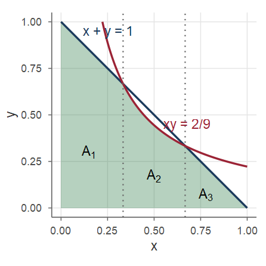
Suma și produsul — soluție (continuare)
Soluție (continuare)
Între abscisele \(\frac13\) și \(\frac23\) hiperbola se află sub dreaptă, iar în afara lor dreapta se află sub hiperbolă. Împărțim \(A\) în trei părți, după \(x\):
- \(A_1\), \(x\in[0,\frac13]\): trapezul de sub dreaptă, \(\mathrm{Aria}(A_1)=\frac13\cdot\frac{1+\frac23}{2}=\frac5{18}\);
- \(A_2\), \(x\in[\frac13,\frac23]\): sub hiperbola \(y=\frac{2}{9x}\), \(\mathrm{Aria}(A_2)=\int_{1/3}^{2/3}\frac{2}{9x}\dd x=\frac29\ln2\);
- \(A_3\), \(x\in[\frac23,1]\): triunghiul de sub dreaptă, \(\mathrm{Aria}(A_3)=\frac12\cdot\frac13\cdot\frac13=\frac1{18}\).
Prin urmare \[ \PP\Big(X+Y\le1,\ XY\le\frac29\Big)=\frac5{18}+\frac1{18}+\frac29\ln2=\frac13+\frac29\ln2\approx0.4874 . \]
Exercițiul: minimul și maximul a două normale
Exercițiul 5 (Corelația dintre minim și maxim pentru normale)
Fie \(X,Y\sim\Norm(0,1)\) independente, \(M=\max(X,Y)\) și \(L=\min(X,Y)\). Arătați că \(\rho(M,L)=\dfrac{1}{\pi-1}\).
Soluție
Observăm că \(M+L=X+Y\) și \(M-L=|X-Y|\).
Mediile. \(\E[M]+\E[L]=\E[X]+\E[Y]=0\). Cum \(X-Y\sim\Norm(0,2)\) (Propoziția 43), \(X-Y=\sqrt2Z\) cu \(Z\sim\Norm(0,1)\) și \(\E|Z|=\sqrt{2/\pi}\), deci \(\E[M]-\E[L]=\E|X-Y|=\sqrt2\sqrt{2/\pi}=\frac{2}{\sqrt\pi}\): \(\E[M]=\frac1{\sqrt\pi}\), \(\E[L]=-\frac1{\sqrt\pi}\).
Covarianța. \(ML=XY\) (produsul nu depinde de ordine), deci \(\E[ML]=\E[X]\E[Y]=0\) și \(\Cov(M,L)=0-\E[M]\E[L]=\frac1\pi\).
Minimul și maximul a două normale — soluție (continuare)
Soluție (continuare)
Varianțele. \((X,Y)\) și \((-X,-Y)\) au aceeași repartiție și \(\max(X,Y)=-\min(-X,-Y)\), deci \(M\) și \(-L\) au aceeași repartiție: \(\Var(M)=\Var(L)\). Din \(\Var(M+L)=\Var(X+Y)=2\) și proprietatea f) a covarianței, \(\Var(M)+\Var(L)+2\Cov(M,L)=2\), deci \(2\Var(M)=2-\frac2\pi\), adică \(\Var(M)=\Var(L)=1-\frac1\pi\). Rezultă \[ \rho(M,L)=\frac{\Cov(M,L)}{\sqrt{\Var(M)\Var(L)}}=\frac{1/\pi}{1-1/\pi}=\frac{1}{\pi-1}\approx0.467 . \]
Exercițiul: minimul și maximul a două uniforme
Exercițiul 6 (Minimul și maximul a două uniforme)
Fie \(X,Y\sim\Unif(0,1)\) independente, \(M=\max(X,Y)\) și \(L=\min(X,Y)\). Calculați \(\E[M]\), \(\E[L]\), \(\Cov(M,L)\) și \(\rho(M,L)\).
Soluție
Aceeași idee. Din \(M+L=X+Y\), \(\E[M]+\E[L]=1\); din \(M-L=|X-Y|\) și Exemplul 13, \(\E[M]-\E[L]=\frac13\). Deci \(\E[M]=\frac23\), \(\E[L]=\frac13\).
Cum \(ML=XY\), \(\E[ML]=\frac14\), deci \(\Cov(M,L)=\frac14-\frac23\cdot\frac13=\frac1{36}\).
Varianțe: \(F_M(t)=\PP(X\le t,Y\le t)=t^2\) pe \([0,1]\), \(f_M(t)=2t\), \(\E[M^2]=\int_0^12t^3\dd t=\frac12\), \(\Var(M)=\frac12-\frac49=\frac1{18}\). Prin simetrie (\(1-L=\max(1-X,1-Y)\)), \(\Var(L)=\frac1{18}\). Așadar \(\rho(M,L)=\frac{1/36}{1/18}=\frac12\).
Exercițiul: o densitate pe un domeniu nemărginit
Exercițiul 7 (O densitate pe un domeniu nemărginit)
Vectorul \((X,Y)\) are densitatea \(f_{X,Y}(x,y)=e^{-y}\) pentru \(0<x<y\) și \(0\) în rest. a) Verificați că \(f_{X,Y}\) este o densitate și determinați densitățile marginale. b) Determinați \(f_{X\mid Y}\), \(f_{Y\mid X}\) și mediile condiționate corespunzătoare. c) Calculați \(\Cov(X,Y)\) și \(\rho(X,Y)\).
Soluție a)
\(f_{X,Y}\ge0\) și \(\int_0^\infty\!\int_0^ye^{-y}\dd x\dd y=\int_0^\infty ye^{-y}\dd y=1\). Pentru \(x>0\), \(f_X(x)=\int_x^\infty e^{-y}\dd y=e^{-x}\): \(X\sim\Exp(1)\); pentru \(y>0\), \(f_Y(y)=\int_0^ye^{-y}\dd x=ye^{-y}\): \(Y\sim\GammaD(2,1)\). Nu sunt independente (suportul \(\{0<x<y\}\) nu este un dreptunghi).
Domeniu nemărginit — soluție b), c)
Soluție (continuare)
Pentru \(y>0\): \(f_{X\mid Y}(x\mid y)=\frac{e^{-y}}{ye^{-y}}=\frac1y\) pe \(0<x<y\), adică \(X\mid Y=y\sim\Unif(0,y)\) și \(\E[X\mid Y]=\frac Y2\). Pentru \(x>0\): \(f_{Y\mid X}(y\mid x)=\frac{e^{-y}}{e^{-x}}=e^{-(y-x)}\) pe \(y>x\), adică \(Y-x\mid X=x\sim\Exp(1)\) (exponențială „deplasată”) și \(\E[Y\mid X]=X+1\).
\(\E[X]=1\), \(\Var(X)=1\), \(\E[Y]=2\), \(\Var(Y)=2\). Cu legea lui Adam și proprietatea c) din Teorema 28, \[ \E[XY]=\E\big[\E[XY\mid X]\big]=\E\big[X\,\E[Y\mid X]\big]=\E[X^2]+\E[X]=2+1=3, \] deci \(\Cov(X,Y)=3-1\cdot2=1\) și \(\rho(X,Y)=\frac1{\sqrt{1\cdot2}}=\frac{1}{\sqrt2}\approx0.707\).
Exercițiul: subțierea Poisson, revăzută
Exercițiul 8 (Subțierea Poisson, revăzută)
Fie \(N\sim\Pois(\lambda)\) și \(X\mid N=n\sim\Bin(n,p)\) (Exemplul 3). Calculați \(\E[X]\) și \(\Var(X)\) cu legile lui Adam și Eve, apoi \(\Cov(N,X)\) și \(\rho(N,X)\).
Soluție
\(\E[X\mid N]=Np\), \(\Var(X\mid N)=Np(1-p)\). Cu Adam și Eve, \(\E[X]=\E[Np]=\lambda p\), \(\Var(X)=\E[Np(1-p)]+\Var(Np)=\lambda p(1-p)+p^2\lambda=\lambda p\), în acord cu \(X\sim\Pois(\lambda p)\).
Subțierea Poisson — soluție (continuare)
Soluție (continuare)
Pentru covarianță scriem \(N=X+Y\), unde \(Y=N-X\) este independentă de \(X\) (Exemplul 3); atunci \(\Cov(N,X)=\Cov(X,X)+\Cov(Y,X)=\Var(X)=\lambda p\).
Alternativ, fără a folosi independența: \(\E[NX]=\E[N\,\E[X\mid N]]=p\E[N^2]=p(\lambda+\lambda^2)\), deci \(\Cov(N,X)=p\lambda+p\lambda^2-\lambda\cdot\lambda p=\lambda p\). În final, \[ \rho(N,X)=\frac{\lambda p}{\sqrt{\lambda\cdot\lambda p}}=\sqrt p . \]
Exercițiul: regula de succesiune a lui Laplace
Exercițiul 9 (Regula de succesiune a lui Laplace)
Probabilitatea de succes \(P\) a unui experiment este necunoscută, modelată ca \(P\sim\Unif(0,1)\). Știind \(P=p\), efectuăm \(n\) repetiții independente; \(X\) = numărul de succese, \(X\mid P=p\sim\Bin(n,p)\).
- Arătați că \(\PP(X=k)=\frac{1}{n+1}\) pentru \(k=0,1,\dots,n\).
- Determinați densitatea a posteriori \(f_{P\mid X}(p\mid k)\) și \(\E[P\mid X=k]\).
- Știind că am obținut \(k\) succese în \(n\) încercări, care este probabilitatea unui succes la următoarea încercare?
Regula de succesiune — soluție a)
Soluție a)
Formula probabilității totale (\(X\) discretă, \(P\) continuă) și integrala Beta \(\int_0^1p^k(1-p)^{n-k}\dd p=\frac{k!\,(n-k)!}{(n+1)!}\): \[ \PP(X=k)=\int_0^1\PP(X=k\mid P=p)f_P(p)\dd p=\binom nk\int_0^1p^k(1-p)^{n-k}\dd p=\frac{n!}{k!(n-k)!}\cdot\frac{k!(n-k)!}{(n+1)!}=\frac1{n+1}. \] Toate numerele de succese sunt egal probabile.
Regula de succesiune — soluție b), c)
Soluție (continuare)
- Cu formula lui Bayes (\(X\) discretă, \(P\) continuă), \[ f_{P\mid X}(p\mid k)=\frac{\PP(X=k\mid P=p)f_P(p)}{\PP(X=k)}=(n+1)\binom nk p^k(1-p)^{n-k}=\frac{(n+1)!}{k!(n-k)!}p^k(1-p)^{n-k},\quad p\in[0,1], \] adică \(P\mid X=k\sim\BetaD(k+1,n-k+1)\), cu media \[ \E[P\mid X=k]=\frac{(n+1)!}{k!(n-k)!}\int_0^1p^{k+1}(1-p)^{n-k}\dd p=\frac{(n+1)!}{k!(n-k)!}\cdot\frac{(k+1)!(n-k)!}{(n+2)!}=\frac{k+1}{n+2}. \]
- Fie \(S\) = „succes la încercarea \(n+1\)”. \(\PP(S\mid P=p,X=k)=p\), deci \(\PP(S\mid X=k)=\int_0^1p\,f_{P\mid X}(p\mid k)\dd p=\E[P\mid X=k]=\frac{k+1}{n+2}\). După \(7\) succese în \(10\) încercări: \(\frac8{12}=\frac23\) (nu \(0.7\)).
Exercițiul: daunele unei companii de asigurări
Exercițiul 10 (Daunele unei companii de asigurări)
Numărul de daune raportate într-un an este \(N\sim\Pois(20)\), iar valorile daunelor (în mii de lei) sunt \(X_1,X_2,\dots\sim\Unif(0,10)\), independente între ele și de \(N\). Fie \(T=\sum_{i=1}^NX_i\). Calculați \(\E[T]\), \(\Var(T)\) și \(\Cov(N,T)\).
Soluție
\(\E[X_1]=5\), \(\Var(X_1)=\frac{100}{12}=\frac{25}3\), \(\E[N]=\Var(N)=20\). Cu Propoziția 30, \[ \E[T]=20\cdot5=100,\qquad \Var(T)=20\cdot\frac{25}3+25\cdot20=\frac{2000}{3}\approx666.7, \] abaterea standard fiind \(\sqrt{2000/3}\approx25.8\) mii lei. Apoi \(\E[NT]=\E\big[N\,\E[T\mid N]\big]=5\E[N^2]=5(20+400)=2100\), deci \(\Cov(N,T)=2100-20\cdot100=100\) (în general, \(\Cov(N,T)=\E[X_1]\Var(N)\)).
Daunele — verificare prin simulare
Primul termen al varianței (\(500/3\)) provine din variabilitatea valorilor daunelor, al doilea (\(500\)) din variabilitatea numărului de daune: incertitudinea asupra lui \(N\) domină.
Exercițiul: diversificarea unui portofoliu
Exercițiul 11 (Diversificarea unui portofoliu)
Randamentele \(X\) și \(Y\) a două active au \(\Var(X)=1\), \(\Var(Y)=4\) și \(\rho(X,Y)=-0.5\). a) Calculați \(\Var(2X-Y+3)\). b) Un investitor plasează fracțiunea \(a\in[0,1]\) din capital în primul activ și \(1-a\) în al doilea: \(R_a=aX+(1-a)Y\). Determinați \(a\) care minimizează \(\Var(R_a)\) și varianța minimă.
Soluție
\(\Cov(X,Y)=\rho\,\sigma_X\sigma_Y=-0.5\cdot1\cdot2=-1\).
\(\Var(2X-Y+3)=4\Var(X)+\Var(Y)-2\cdot2\Cov(X,Y)=4+4+4=12\).
\(\Var(R_a)=a^2+4(1-a)^2-2a(1-a)\). Derivând, \(2a-8(1-a)-2(1-2a)=14a-10=0\), deci \(a^*=\frac57\) (minim, coeficientul lui \(a^2\) fiind \(7>0\)), cu \(\Var(R_{a^*})=\frac{25}{49}+4\cdot\frac{4}{49}-2\cdot\frac57\cdot\frac27=\frac{21}{49}=\frac37\approx0.43\) — mai mică decât varianța oricăruia dintre active.
Exercițiul: distanța până la centrul discului
Exercițiul 12 (Distanța până la centrul discului)
Fie \((X,Y)\sim\Unif(D)\), \(D\) discul de rază \(r\) centrat în origine, și \(R=\sqrt{X^2+Y^2}\). a) Determinați funcția de repartiție și densitatea lui \(R\), apoi \(\E[R]\) și \(\Var(R)\). b) Calculați \(\Var(X)\) și \(\Cov(X,Y)\). Sunt \(X\) și \(Y\) necorelate? Dar independente?
Soluție
- Pentru \(0\le t\le r\), \(\{R\le t\}\): punctul cade în discul de rază \(t\), deci \(F_R(t)=\frac{\pi t^2}{\pi r^2}=\frac{t^2}{r^2}\), \(f_R(t)=\frac{2t}{r^2}\) pe \([0,r]\); \(\E[R]=\int_0^r\frac{2t^2}{r^2}\dd t=\frac{2r}{3}\), \(\E[R^2]=\frac{r^2}{2}\), \(\Var(R)=\frac{r^2}2-\frac{4r^2}9=\frac{r^2}{18}\).
Distanța până la centru — soluție b)
Soluție (continuare)
- Prin simetrie \(\E[X]=\E[Y]=0\) și \(X\), \(Y\) au aceeași repartiție; din \(\E[X^2]+\E[Y^2]=\E[R^2]=\frac{r^2}{2}\), \(\Var(X)=\frac{r^2}{4}\) (ca prin legea lui Eve). \((X,Y)\) și \((-X,Y)\) au aceeași repartiție, deci \(\E[XY]=\E[-XY]=0\) și \(\Cov(X,Y)=0\): necorelate, dar nu independente (\(\PP(X>0.8r,\ Y>0.8r)=0\), deși ambele marginale sunt pozitive).
De reținut (I)
De reținut — repartiții comune
- \(F_{X,Y}(x,y)=\PP(X\le x,Y\le y)\). Discret: \(p_{X,Y}(x,y)=\PP(X=x,Y=y)\); continuu: \(\PP((X,Y)\in A)=\iint_A f_{X,Y}\), \(f_{X,Y}=\partial^2F_{X,Y}/\partial x\partial y\). Uniformă pe \(S\): \(f=\Ind_S/\mathrm{Aria}(S)\).
- Marginale: \(p_X(x)=\sum_y p_{X,Y}(x,y)\), \(f_X(x)=\int f_{X,Y}(x,y)\dd y\).
- Condiționate: \(p_{X\mid Y}=\frac{p_{X,Y}}{p_Y}\), \(f_{X\mid Y}(x\mid y)=\frac{f_{X,Y}(x,y)}{f_Y(y)}\); \(f_{X,Y}=f_{X\mid Y}f_Y=f_{Y\mid X}f_X\).
- F.P.T. și Bayes: \(f_X(x)=\int f_{X\mid Y}(x\mid y)f_Y(y)\dd y\), \(f_{X\mid Y}=\frac{f_{Y\mid X}f_X}{f_Y}\); hibrid: \(\PP(X=x\mid Y=y)=\frac{\PP(X=x)f_{Y\mid X}(y\mid x)}{f_Y(y)}\).
- Independență: \(f_{X,Y}=f_Xf_Y\) (\(p_{X,Y}=p_Xp_Y\)); factorizare \(g(x)h(y)\) pe tot planul; \(\E[g(X)h(Y)]=\E g(X)\,\E h(Y)\).
De reținut (II)
De reținut — medii, covarianță, sume
- \(\E[g(X,Y)]=\iint g f_{X,Y}\) (sau \(\sum\sum g\,p_{X,Y}\)); \(\E[aX+bY]=a\E X+b\E Y\) mereu.
- \(\E[X\mid Y]=g(Y)\), \(g(y)=\E[X\mid Y=y]\); Adam: \(\E[\E[X\mid Y]]=\E[X]\); Eve: \(\Var(X)=\E[\Var(X\mid Y)]+\Var(\E[X\mid Y])\); \(\E[X\mid Y]=\argmin_h\E[(X-h(Y))^2]\).
- Sume aleatoare: \(\E T=\E N\,\E X_1\), \(\Var T=\E N\Var X_1+(\E X_1)^2\Var N\).
- \(\Cov(X,Y)=\E[XY]-\E X\E Y\); \(\Var(X+Y)=\Var X+\Var Y+2\Cov(X,Y)\); \(\rho=\frac{\Cov(X,Y)}{\sigma_X\sigma_Y}\in[-1,1]\), \(|\rho|=1\Leftrightarrow Y=aX+b\); independente \(\Rightarrow\) necorelate (reciproca falsă). \(\rho\) este cosinusul unghiului dintre variabilele centrate. Matricea de covarianță \(\Sigma\): \(\Var(\mathbf a^\top\mathbf X)=\mathbf a^\top\Sigma\,\mathbf a\ge0\), \(\Cov(A\mathbf X+\mathbf b)=A\Sigma A^\top\); \(\mu+L\mathbf Z\), cu \(LL^\top=\Sigma\), are media \(\mu\) și matricea de covarianță \(\Sigma\).
- Convoluție: \(f_{X+Y}(z)=\int f_X(x)f_Y(z-x)\dd x\); \(\Pois(\lambda)+\Pois(\mu)=\Pois(\lambda+\mu)\); \(\sum_{i=1}^n\Exp(\lambda)=\GammaD(n,\lambda)\); \(\Norm(\mu_1,\sigma_1^2)+\Norm(\mu_2,\sigma_2^2)=\Norm(\mu_1+\mu_2,\sigma_1^2+\sigma_2^2)\).
Exerciții propuse (I)
- Se aruncă două zaruri echilibrate; \(U\) = cel mai mic, \(V\) = cel mai mare rezultat. Determinați repartiția comună și marginalele lui \((U,V)\), \(U\mid V=4\) și \(\Cov(U,V)\). (Răspuns: \(\E[U]=\frac{91}{36}\), \(\E[V]=\frac{161}{36}\), \(\Cov(U,V)=\frac{1225}{1296}\approx0.945\), \(\rho\approx0.479\).)
- \(f_{X,Y}(x,y)=c\,xy\) pentru \(0\le y\le x\le1\). Determinați \(c\), marginalele, \(f_{Y\mid X}\) și \(\E[Y\mid X]\). Sunt \(X\) și \(Y\) independente? (Răspuns: \(c=8\), \(f_X=4x^3\), \(f_Y=4y(1-y^2)\), \(f_{Y\mid X}=2y/x^2\) pe \([0,x]\), \(\E[Y\mid X]=2X/3\); nu.)
- \(X\sim\Unif(0,1)\) și \(Y\mid X=x\sim\Unif(0,x)\). Determinați \(f_Y\), \(\E[Y]\), \(\Var(Y)\), direct și cu Adam și Eve. (Răspuns: \(f_Y(y)=-\ln y\) pe \((0,1)\), \(\E[Y]=\frac14\), \(\Var(Y)=\frac{7}{144}\).)
- Un zar se aruncă de \(n\) ori; \(N_i\) = numărul de apariții ale feței \(i\). Arătați că \(\Cov(N_1,N_2)=-\frac{n}{36}\) și calculați \(\rho(N_1,N_2)\). (Indicație: sume de indicatori. Răspuns: \(\rho=-\frac15\).)
Exerciții propuse (II)
- \(N\) geometrică, \(\PP(N=k)=(1-p)^{k-1}p\), \(k\ge1\), iar \(X_1,X_2,\dots\sim\Exp(\lambda)\) independente între ele și de \(N\). Calculați media și varianța lui \(T=\sum_{i=1}^NX_i\). (Răspuns: \(\E[T]=\frac{1}{p\lambda}\), \(\Var(T)=\frac{1}{p^2\lambda^2}\); de fapt \(T\sim\Exp(p\lambda)\).)
- O componentă provine de la mașina \(A\) (prob. \(0.6\), durată exponențială de medie 2 ani) sau \(B\) (prob. \(0.4\), medie 4 ani). S-a defectat după exact 3 ani. Probabilitatea să provină de la \(B\)? (Răspuns: \(\approx0.414\).)
- \(X\sim\Exp(\lambda)\), \(Y\sim\Exp(\mu)\) independente. Arătați că \(\PP(X<Y)=\frac{\lambda}{\lambda+\mu}\) și \(\min(X,Y)\sim\Exp(\lambda+\mu)\). (Pentru \(\lambda=2\), \(\mu=3\): \(0.4\).)
- \(X,Y\sim\Unif(0,1)\) independente. Arătați, cu convoluția, că \(Z=X+Y\) are densitatea \(f_Z(z)=z\) pe \([0,1]\), \(2-z\) pe \((1,2]\), și calculați \(\PP(Z\le 1.5)\). (Răspuns: \(7/8\).)
Bibliografie
- Lecturi recomandate: (Blitzstein and Hwang 2019, cap. 7, 9); (Bertsekas and Tsitsiklis 2008, cap. 2, 3, 4); (Ross 2014, cap. 6, 7); (Chan 2021, cap. 5); (Wagaman and Dobrow 2021).
Bertsekas, Dimitri P., and John N. Tsitsiklis. 2008. Introduction to Probability. 2nd ed. Athena Scientific.
Blitzstein, Joseph K., and Jessica Hwang. 2019. Introduction to Probability. 2nd ed. CRC Press.
Chan, Stanley H. 2021. Introduction to Probability for Data Science. Michigan Publishing.
Ross, Sheldon M. 2014. Introduction to Probability and Statistics for Engineers and Scientists. 5th ed. Elsevier Academic Press.
Wagaman, Amy S., and Robert P. Dobrow. 2021. Probability with Applications and R. 2nd ed. Wiley.
Probabilități și Statistică · Cursul 6 — Vectori aleatori